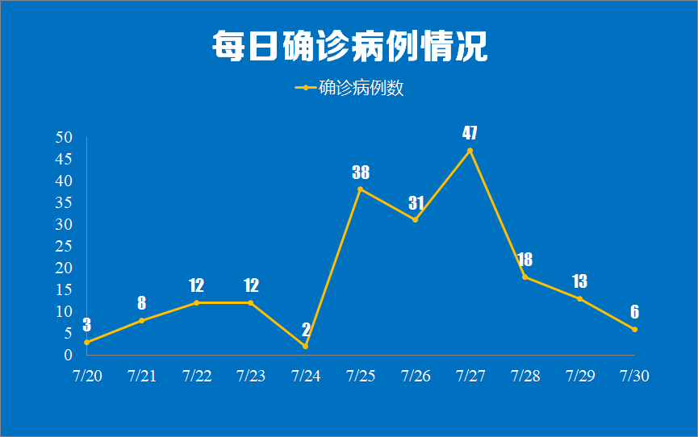
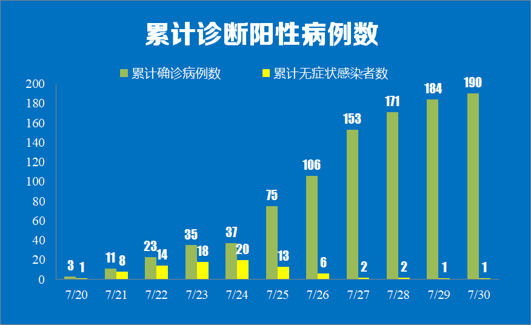
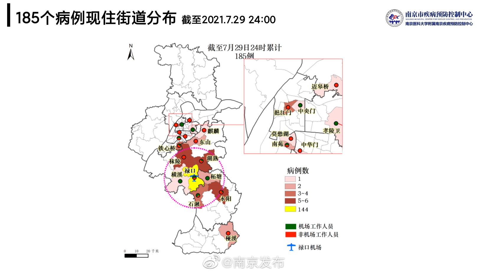
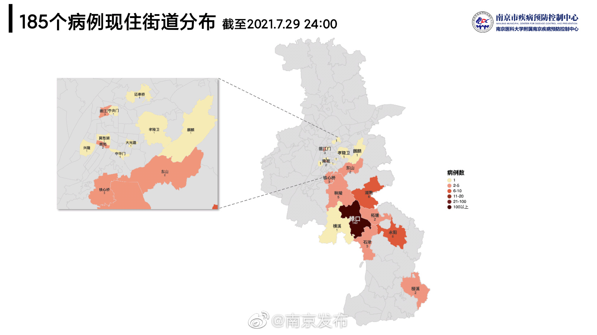
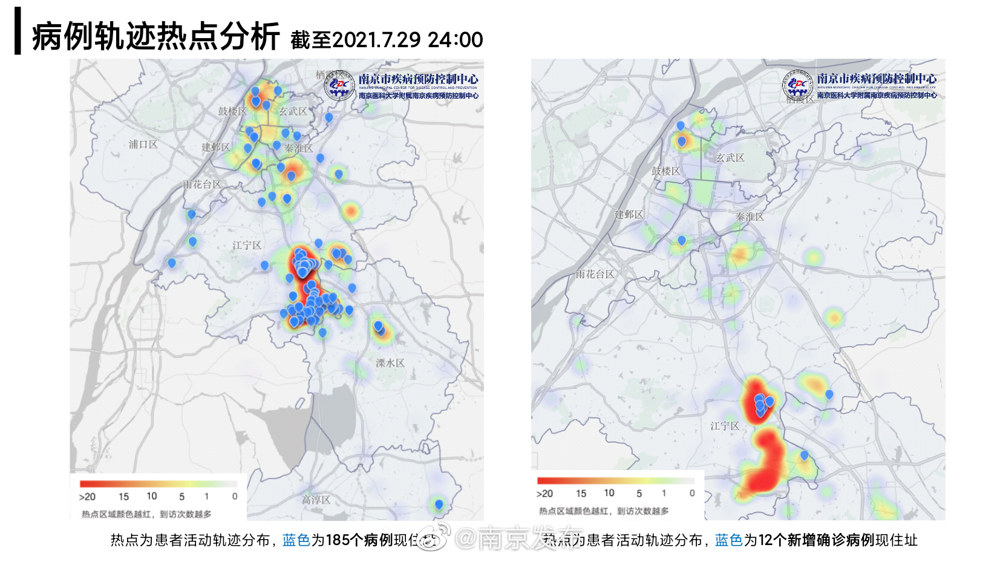

南京禄口机场系列疫情汇总
南京市内确诊情况


南京确诊患者停留地图



小程序非本文作者或政府等官方机构开发。为了您的隐私安全，请拒绝该小程序获取你的昵称、头像、地区及性别或使用其他头像和昵称，不允许访问你当前的地理位置信息，不关注服务号。
南京市风险区域
高风险地区 1 个：
江宁区禄口街道；
中风险地区30个：
江宁区湖熟街道周岗社区张巷自然村、庄上自然村、新风苑和周岗社区围合区域（东至集贤路，南至长干街，西至康庄路，北至齐尚街），尚桥社区焦东自然村，钱家村钱家自然村，秣陵街道殷巷社区龙湖文馨苑小区，青源社区翠屏湾花园城，横溪街道许呈社区小呈自然村，东山街道骆村社区天琪福苑，岔路社区绿城深蓝小区，麒麟街道麒麟门社区麒西路 95 号，淳化街道新林村郭村自然村；玄武区孝陵卫街道胜利村 100 号；秦淮区瑞金路街道标营 4 号 26 栋、27 栋、28 栋、29 栋、30 栋，秦淮区中华门街道晨光新苑 16 栋；建邺区南苑街道所街 26 号、吉庆家园小区，莫愁湖街道凤栖苑；鼓楼区挹江门街道大桥南路 10 号，中央门街道工人新村小区；雨花台区铁心桥街道凤翔花园 4 期、凤翔新城 1 期、景明佳园小区；栖霞区迈皋桥街道和燕花苑 12 幢；溧水区石湫街道九塘行政村毛家圩自然村，永阳街道万科城香樟苑、宏力花苑，柘塘街道湖滨新寓；高淳区桠溪街道省道 239 与桠定路交叉路口芜太建材店所在建筑范围。
涉及的公共交通工具
飞机
- 7月13日 HO1693
- 7月14日 MF8069
- 7月16日 HU7316
- 7月17日 8L9708、CA8581、CZ5846、HO1753、MF8058、PN6259、PN6280
- 7月19日 CZ5846、HU7315
- 7月24日 9H6018、MF8857
- 7月25日 CZ3382、CZ6322、GS7655、MU9886
火车
- 7月17日 G7771
- 7月18日 G7058
- 7月19日 D942
- 7月21日 G2641、K692
- 7月23日 C8043、D5426
- 7月24日 G7295、K691
- 7月25日 C8875、D7296、G486
公交和地铁
南京市
- 5路、820路、851路、939路
- 地铁1号线、3号线、S1号线、S9号线
无锡市
- 地铁1号线、3号线
中山市
- 001、K08
成都市
- 地铁2号线、4号线、7号线、18号线
西安市
- 340路
- 地铁1号线、2号线、3号线、4号线、9号线
出租车、网约车、大巴
- 苏A 20A7T、32QG6、D39458、G2E87、H4722
- 苏B 1T919、58AK8、D01753
- 川A 1S91S、7A65B、DT4555、TZ385
- 川E 7623B、B92T9
- 辽B T1853
- 湘H X0359、X0865
- 湘U A2701
- 陕A **3M5
确诊病例情况（含南京和外地）
作者自行统计总结，信息来源于各地政府官方账号和权威媒体，可能与实际情况有细微出入。
截至目前，本轮疫情共有 271 名病毒携带者（确诊病例 + 无症状感染者），其中：
- 南京市 191 名
其中本土确诊病例190例（其中87例轻型，95例普通型，8例重型），本土无症状感染者1例。所有191例感染者中，江宁区163例、溧水区11例、建邺区4例、鼓楼区4例、雨花台区3例、秦淮区2例、高淳区2例、玄武区1例、栖霞区1例。 - 扬州市 16 名
- 株洲市 11 名
- 成都市 7 名
- 张家界市 5 名
- 沈阳市、淮安市、大连市、厦门市各 4 名
- 宿迁市、北京市、常德市、重庆市、宁乡市、泸州市、长沙市各 2 名
- 中山市、芜湖市、马鞍山市、绵阳市、珠海市、宜宾市、益阳市、无锡市、湘潭市、湘西州、银川市、郑州市、黄冈市各 1 名
| 确诊日期 | 类型 | 序号 | 详情 |
|---|---|---|---|
| 7月20日 | 确诊轻型 | 1 | 女，40岁，现住南京市江宁区铜山新农村，在禄口机场从事保洁工作。 7月10日上午居家未出，15:02分前往禄口天宇果业（地址铜山铜岭路249号）。7月11日骑电动车往返禄口机场上班。7月12日居家未出。7月13日至7月16日，每日骑电动车往返禄口机场上班。7月17日在禄口机场上班，17:00驾驶电动三轮车前往八方客食府（铜山镇铜岭新村14-3号）聚餐。7月18日至7月19日，每日骑电动车往返禄口机场上班。7月20日11时转至江宁医院开发区分院，后通过专用救护车转运至南京市公共卫生医疗中心隔离治疗。 |
| 7月20日 | 确诊轻型 | 2 | 女，45岁，现住南京市江宁区禄口街道成功村韩庄，在禄口机场从事保洁工作。 7月10日至7月17日，每日骑电动车往返禄口机场上班。7月18日上午在家未出，下午17:11因头疼骑电动车至禄口社区卫生服务中心就诊，19:00骑电动车回家。7月19日7:20骑电动车至禄口机场上班，15:03骑电动车到禄口社区卫生服务中心就诊，17:00骑电动车回家。7月20日7:00至禄口机场上班，13:50转至江宁医院开发区分院，后通过专用救护车转运至南京市公共卫生医疗中心隔离治疗。 |
| 7月20日 | 确诊轻型 | 3 | 女，51岁，现住南京市江宁区禄口街道横峰街，在禄口机场从事保洁工作。 7月10日在中国邮政航空速递物流集散中心工作，12:20到茅三妹文具店逗留约20分钟。7月11日8:00骑电动车前往南京禄口国际机场工作，16:00后骑电动车陪丈夫前往铜山卫生院接种疫苗，17:30骑电动车回家。7月12日居家未出。7月13日骑电动车往返禄口机场上班。7月14日居家未出。7月15日8:00至7月16日0:00，骑电动车往返禄口机场上班。7月16日8:00骑电动车前往中国银行南京禄口机场支行办理银行卡，9:40离开。9:40骑电动车前往金城文体复印店（南京航空航天大学金城学院西侧约41米），10:32返回家中，7月16日22:30至7月17日10:00在中国邮政航空速递物流集散中心；7月17日12:30至7月18日04:00在南京禄口国际机场工作，下班后居家未出。7月19日8:00至7月20日00:30在南京禄口国际机场工作。7月20日居家未出，12:30送至江宁医院开发区分院，后通过专用救护车转运至南京市公共卫生医疗中心隔离治疗。 |
| 7月20日 | 确诊普通型 | 4 | 女，50岁，现住南京市江宁区禄口街道石埝社区，在禄口机场从事保洁工作。 7月6日至7月15日，上午7:30骑电动车去禄口机场上班，下班后骑电动车回家，其余时间无外出。7月16日上午11:00至禄口街道瑞江红酒店参加宴席，下午在南天路小吴五金店、铜山金肯学院附近市场等处购物。7月17至7月20日,上午7:30骑电动车去禄口机场上班，下午后骑电动车回家，其余时间无外出。后通过专用救护车转运至南京市公共卫生医疗中心隔离治疗。 |
| 7月20日 | 确诊普通型 | 5 | 女，48岁，现住南京市江宁区禄口街道铜岭新村，在禄口机场从事保洁工作。 7月10日至7月17日每天往返禄口机场与住处。7月18日9:00左右去铜山农贸市场买菜，12:00左右乘坐851路公交车至蓝天路站，到来凤路逛街，16:00左右乘坐851路公交车回铜山农贸市场站。7月19日7:00从住处骑电动车前往禄口机场上班，14:00下班,后居家未出。7月20日7:00从住处骑电动车前往禄口机场上班，11:00被送至机场隔离房间，后通过专用救护车转运至南京市公共卫生医疗中心隔离治疗。 |
| 7月20日 | 确诊普通型 | 6 | 女，48岁，现住南京市溧水区石湫街道九塘村，在禄口机场从事保洁工作。 7月10日居家未出。7月11日至7月13日，每日骑电动车往返禄口机场上班。7月14日居家未出。7月15日骑电动车往返禄口机场上班。7月16日居家未出。7月17至7月19日，每日骑电动车往返禄口机场上班。7月20日，骑电动车7:30到达禄口机场上班，10:30转运至江宁区集中隔离点隔离观察，后通过专用救护车转运至南京市公共卫生医疗中心隔离治疗。 |
| 7月20日 | 确诊轻型 | 7 | 女，38岁，现住南京市江宁区禄口街道铜岭新村，在禄口机场从事保洁工作。 7月10日居家未出。7月11日9:30左右与丈夫、女儿一家三口从家出发前往江宁区铜山地铁站，乘坐地铁S9号线（往南京南站方向），10:16左右在翔宇路南站内换乘地铁S1号线（往南京南站方向），10:40左右江宁区翠屏山地铁站下车，10:48乘网约车前往百家湖好又多购物中心，后乘坐亲戚私家车前往胜太西路小厨娘店聚餐，13:10左右乘网约车前往江宁医院湖山路分院，陪丈夫和女儿就诊，16:00左右乘网约车前往翠屏山地铁站，乘S1转S9号线，17:12抵达铜山站，步行回家后未出。7月12日居家未出。7月13日骑电动车往返禄口机场上班。7月14日居家未出。7月15日骑电动车往返禄口机场上班。7月16日下午14:00前往铜山社区卫生服务中心门诊就诊，16:30返回家中未外出。7月17日9:00前往铜山社区卫生服务中心门诊就诊，11:00返回家中未外出。7月18日至19日骑电动车往返禄口机场上班。7月20日8:00至禄口机场上班，16:30转运到集中隔离点，后通过专用救护车转运至南京市公共卫生医疗中心隔离治疗。 |
| 7月20日 | 无症状感染者 | 无-1 | 女，48岁，现住南京市江宁区禄口街道石埝社区，在禄口机场从事保洁工作。 7月10日至12日，每日骑电动车往返禄口机场上班。7月13日9:00左右前往江宁铜山菜场购物，10:00后居家未出。7月14日至19日，每日骑电动车往返禄口机场上班。7月20日8:00左右，陪女儿乘坐网约车（苏A20A7T）去鼓楼医院就诊，9:00点从鼓楼医院三号门进入，9:20于4楼门诊自助挂号机挂号，后前往5楼5区病人等候区等候。11:00左右，进入39号诊室就诊；11:00前往门诊3楼采血处采血，后前往门诊2楼食堂就餐；约11:30前往3楼自助报告机取报告。后前往5楼5区；12:00于5楼5区自助挂号机挂号，后前往一楼星巴克等店购物；13:15发热门诊被隔离，后通过专用救护车转运至南京市公共卫生医疗中心隔离治疗。 |
| 7月20日 | 无症状感染者 | 无-2 | 女，44岁，现住南京市江宁区禄口街道铜山社区，在禄口机场从事客舱保洁工作。 7月6日至10日，每日骑电动车往返禄口机场上班。7月11日9:50骑电动车前往父亲家（溧水区石湫镇太平大圩东进村），12:00后回家。7月12日至14日，每日骑电动车往返禄口机场上班。7月15日8:00左右从铜山站乘坐851路公交车到义乌站，后转乘835路公交车到江宁医院湖山路院区复诊，13时乘坐835路公交车转851路公交车回家，后一直居家未外出。7月16日至19日，每日骑电动车往返禄口机场上班。7月20日6:00前往盛庄菜场买菜，6:10回家，后骑电动车上班，10:00接江宁区疾控中心通知在机场隔离，22:00转运至隔离酒店，后通过专用救护车转运至南京市公共卫生医疗中心隔离治疗。 |
| 7月21日 | 确诊普通型 | 8 | 女，34岁，现住南京市江宁区禄口街道欢墩山，在禄口机场从事客机机舱打扫工作。 7月10日4:00从禄口机场结束工作后骑电动车回家，10:00左右至铜山菜场俊杰卤菜店购物。7月11日骑电动车往返禄口机场上班。7月12日居家未出。7月13日骑电动车往返禄口机场上班。7月14日居家休息，17:00左右骑电动车到铜山菜场附近的铜山冷饮批发中心、忘不了菜馆聚餐，19:00在铜山金城购物。7月15日至17日骑电动车往返禄口机场上班。7月18日7:30左右独自到铜山菜场的小笼汤包店购买食品后回家，17:00在铜山菜场卤菜店、小杨水果店购物后回家。7月19日骑电动车往返禄口机场上班。7月20日上午居家未出，16:00左右被专车送至江宁医院开发区分院，后通过专用救护车转运至南京市公共卫生医疗中心隔离治疗。 |
| 7月21日 | 确诊普通型 | 9 | 女，46岁，现住南京市江宁区禄口街道铜山社区曹村，在禄口机场从事客舱保洁工作。 7月10日居家未出。7月11日骑电动车往返禄口机场上班。7月12日9:00至10:30骑电动车到好又多超市铜山店购物。7月13日至14日每日骑电动车往返禄口机场上班。7月14日16:10至17:25到禄口街道铜岭路249号购买手机后回家未出。7月15日骑电动车往返禄口机场上班。7月16日居家未出。7月17日骑电动车往返禄口机场上班。7月18日居家未出。7月19日骑电动车往返禄口机场上班。7月20日居家未出。7月21日通过专用救护车转运至南京市公共卫生医疗中心隔离治疗。 |
| 7月21日 | 无症状感染者 | 无-3 | 女，26岁，现住江宁区禄口街道禄口大街，在禄口机场从事客舱保洁工作。 7月10日、11日骑电动车往返禄口机场上班。7月12日上午居家未出，18:00-19:00自驾到如意湖。7月13日骑电动车往返禄口机场上班。7月14日居家未出。7月15日，骑电动车往返禄口机场上班。7月16日买早点，7:15乘网约车（苏A32QG6）前往同仁医院陪家人看病，在候诊区、药房逗留，后乘网约车返回（苏AG2E87），10:15骑电动车去蓝天路菜场买菜，11:00返回家后未外出。7月17日骑电动车往返禄口机场上班。7月18日居家未出。7月19日骑电动车往返禄口机场上班。7月20日17时转至江宁医院开发区分院，后通过专用救护车转运至南京市公共卫生医疗中心隔离治疗。 |
| 7月21日 | 无症状感染者 | 无-4 | 女，43岁，现住南京市江宁区禄口街道铜山社区，在禄口机场从事保洁工作。 7月10日10:00骑电动车前往苏果超市铜山店购物。7月11日骑电动车往返禄口机场上班。7月12日12:36前往地铁铜山站，乘坐S9转S1号线至翠屏山站，转820公交车，14:00到达西市井站，在东山外国语学校内停留5分钟左右后乘坐820路、S1号线、S9号线于16:00原路返回。7月13日至7月15日骑电动车往返禄口机场上班。7月16日10:30骑电动车前往铜山冷饮批发中心（江宁区恒峰街34号），11:30到铜山邮局自助存钱。7月17日至19日骑电动车往返禄口机场上班。7月20日居家未出。7月21日通过专用救护车转运至南京市公共卫生医疗中心隔离治疗。 |
| 7月21日 | 无症状感染者 | 无-5 | 女，43岁，现住南京市江宁区禄口街道铜山社区，在禄口机场从事保洁工作。 7月10日10:00骑电动车前往苏果超市铜山店购物。7月11日骑电动车往返禄口机场上班。7月12日12:36前往地铁铜山站，乘坐S9转S1号线至翠屏山站，转820公交车，14:00到达西市井站，在东山外国语学校内停留5分钟左右后乘坐820路、S1号线、S9号线于16:00原路返回。7月13日至7月15日骑电动车往返禄口机场上班。7月16日10:30骑电动车前往铜山冷饮批发中心（江宁区恒峰街34号），11:30到铜山邮局自助存钱。7月17日至19日骑电动车往返禄口机场上班。7月20日居家未出。7月21日通过专用救护车转运至南京市公共卫生医疗中心隔离治疗。 |
| 7月21日 | 无症状感染者 | 无-6 | 男， 37岁，现住南京市江宁区禄口街道铜山社区，在南京禄口机场装卸科从事地面服务工作。 7月10、11日自驾往返禄口机场上班。7月12日自驾外出至雨花台区软件大道宏图三胞总部东、建邺区江东中路98号万达商务楼A座、凤凰西街中国建设银行、禄口街道客运站等处，19:00至19:50前往好又多超市（铜山店）。7月13日自驾往返禄口机场上班。7月14日8:30至9:20自驾至溧水县栖凤北路征信中心。7月15日自驾往返禄口机场上班。7月16日2:00下班后自驾居家未出。7月17日自驾往返禄口机场上班。7月18日居家未出。7月19日6:40左右在南京灌汤小笼包（铜山社区卫生服务中心马路对面）吃早饭，后自驾往返禄口机场上班。7月20日23:30转至集中隔离点，后通过专用救护车转运至南京市公共卫生医疗中心隔离治疗。 |
| 7月21日 | 无症状感染者 | 无-7 | 男，44岁，现住南京市江宁区禄口街道茅亭小区，在禄口机场从事地服工作。 7月10日3:00下班自驾回家，11:00前往亲戚家，19:10返回家中。7月11日自驾往返禄口机场上班。7月12日9:20骑电动车前往盛庄菜场买菜，9:40回家后未外出，16:55在小区外敬革烟酒店（江宁区茅亭路166号）购物。7月13日8:00自驾去机场上班至14日3:00下班自驾回家。7月14日10:00骑电动车前往盛庄菜场外面的摊位购买小鸡，10:30回家后未外出。7月15日自驾往返禄口机场上班。7月16日10:20骑电动车前往盛庄菜场买菜，10:50回家后未外出。7月17日8:00从家开车去机场上班至18日3:00开车下班。7月18日居家未出，15:00左右在盛庄菜场买菜，15:15骑电动车回家。7月19日自驾往返禄口机场上班。7月20日居家未出，7月21日4:00专车转运至锦江之星酒店隔离，后通过专用救护车转运至南京市公共卫生医疗中心隔离治疗。 |
| 7月21日 | 无症状感染者 | 无-8 | 男，43岁，现住南京市江宁区禄口街道百利华府，在禄口机场从事地服工作。 7月10日上午9:11在汪记面馆吃饭，9:30去附近菜场买菜后回家。7月11日自驾往返禄口机场上班。7月12日12:00前往鲍显珍烟酒店买香烟，下午16:00至17:12在机场接人，19:39前往如意湖（禄口街道越秀路）后回家。7月13日自驾往返禄口机场上班，19:05在蓝天菜场买菜后回家。7月14日10:40左右前往小林科技（永亨手机）修手机，下午16:37在蓝天路菜场买菜，16:47再次前往小林科技（永亨手机）购物。7月15日7:00左右出门，在永欣公寓北大门汪记面馆吃饭，在浩超百货、湖熟熟菜店购物，随后8:00至7月16日4:00自驾往返禄口机场上班。7月16日10:00在鲍显珍烟酒店购买香烟，15:00左右自驾前往江宁中医院就诊。16:49起在香君楼（蓝天路104号百利华府）、古今烧烤店（正阳路153号正阳宾馆对面）购物后回家。7月17日自驾往返禄口机场，下班后19:00前往禄口社区卫生服务中心就诊后回家；7月18日9:00左右前往世纪华联超市（百利广场店）停留约30分钟，11:00左右驾车前往江宁区佘村龙出没乐园游玩，14:00左右返程回家；7月19日上午自驾至禄口机场上班，到7月20日7:00下班，中途在永欣公寓附近早餐摊位购买早饭，在附近菜场买菜后回家，7月21日凌晨1:50左右，由大巴车送到江宁区隔离酒店，后由专车转运至南京市公共卫生医疗中心隔离治疗。 |
| 7月21日 | 确诊轻型 | 10 | 女，38岁，现住江宁区禄口街道机场社区一小区，在禄口机场担任保洁人员司机。 7月10日1:00从禄口机场下班回家，10日、11日白天居家未出，每晚19:30至21:00在百利广场。7月12日自驾往返禄口机场上班。7月13日白天在家，18:30带儿子前往菲力健身运动。7月14日居家未出。7月15日自驾往返禄口机场上班。7月16日6:00至15:00在禄口机场肯德基店兼职，19:00至20:30在百利广场。7月17日11:15至15:00在家附近棋牌室，17:30至18:30到亲戚家吃饭，18:30至20:30在家附近棋牌室。7月18日自驾往返禄口机场上班。7月19日居家未出。7月20日9:00骑电动车到永欣“北大门”菜场买菜后回家，11:30至16:00在家附近棋牌室，当晚通过专用救护车转运至南京市公共卫生医疗中心隔离治疗。 |
| 7月21日 | 确诊轻型 | 11 | 男，14岁，学生，系确诊病例10之子，现住江宁区禄口街道机场社区一小区。 7月10日居家未出。7月11日白天居家未出，19:00骑自行车到百利广场，20:30返回家中。7月12日15:00在小区楼下鸡排店买奶茶后到同学家。7月13日随确诊病例10一起活动。7月14日居家未出。7月15日15:00，骑自行车先后去同学家、机场社区居委会、图书馆等处活动，17:00回家。19:00骑自行车到百利广场，20:30返回。7月16日下午15:00，骑自行车先后去同学家、机场社区居委会、图书馆等处活动，17:00回家。7月17日17:30至18:30到亲戚家吃饭。18:40到百利广场，19:00乘三轮摩托马自达回家。7月18日15:00，骑自行车先后去同学家、机场社区居委会、图书馆等处活动，17:00回家。19:00骑自行车到百利广场，20:30返回。7月19日19:00骑自行车到百利广场，20:30返回。7月20日上午未出家门。19:00左右出现发热症状，后通过专用救护车转运至南京市公共卫生医疗中心隔离治疗。 |
| 7月22日 | 确诊轻型 | 12 | 女，45岁，现住江宁区禄口街道桑园村排驾口自然村，在禄口机场从事保洁工作。 7月10日骑电动车往返禄口机场上班。7月11日9:10至9:50至铜山菜场和苏宜购超市铜山店购物。7月12日骑电动车往返禄口机场上班。7月13日居家未出。7月14日至18日每日骑电动车往返禄口机场上班。7月19日9:00到铜山社区铜山小学旁理发店、铜山菜场等处，后返回家中。7月20日骑车至禄口机场上班，检测核酸后留观。7月21日14:00被专车转运至集中隔离点，后通过专用救护车转运至南京市公共卫生医疗中心隔离治疗。 |
| 7月22日 | 确诊普通型 | 13 | 女，41岁，现住南京市江宁区禄口街道陈巷村前陈巷自然村，在禄口机场从事保洁工作。 7月10日骑电动车往返禄口机场上班。7月11日10:40在金城步行街沙县小吃、铜山好又多超市、新鲜蔬菜等店活动。7月12日上午骑电动车至禄口机场上班，18:00至20:00在金城步行街洋洋蛋糕店、旺发土菜馆停留。7月13日骑电动车往返禄口机场上班。7月14日骑电动车上班至15日晨回家，途中6:40在铜山老夏面馆吃饭，15日12:50骑电动车上班至次日凌晨1:30回家。7月16日骑电动车往返禄口机场上班。18:05至金城步行街购物，19:30左右回家。7月17日骑电动车往返禄口机场上班。18:00左右至金城步行街至19:00左右回家。7月18日在金城步行街北京杂酱面、蜜雪冰城停留。11:40骑电动车上班至次日凌晨2:40。7月19日8:00至8:20在铜山盛庄农贸市场买菜。7月20日7:20骑电动车上班，中途在石埝十字路口烤冷面石埝店购物。7月21日16:00左右转运至集中隔离酒店隔离医学观察，后通过专用救护车转运至南京市公共卫生医疗中心隔离治疗。 |
| 7月22日 | 确诊普通型 | 14 | 女，41岁，现住南京市江宁区禄口街道彭福村彭福自然村，在禄口机场从事客舱保洁工作。 7月10日骑电动车往返禄口机场上班。7月11号6:00至溧水朋友家里吃饭后回家。7月12日上班至次日2:00下班回家。7月13日17:40自驾至溧水海乐城渔小二饭店，19:30自驾回家。7月14日上班至次日凌晨4:20下班回家。7月15日居家未出。7月16日上班至次日5:10下班骑电动车回家。7月17日18:00左右自驾至欢墩山父母家。7月18号骑电动车往返禄口机场上班。7月19号6:30左右去铜山菜市场购物，后在曹村街道好又多超市取快递。7月20日骑电动车至禄口机场上班。7月21号16:00转移至隔离宾馆，后通过专用救护车转运至南京市公共卫生医疗中心隔离治疗。 |
| 7月22日 | 确诊普通型 | 15 | 女，40岁，现住南京市江宁区禄口街道钟村社区永欣新寓春兰苑，在禄口机场从事客舱保洁工作。 7月10日骑车往返禄口机场上班。7月11日9:00前往岗山超市购物后回家。7月12日到机场上班。7月13日10:00乘坐852路公交车去往南京市临江高中取物品（未进入学校），后原路返回。7月14日到机场上班。7月15日居家未出。7月16日到机场上班。7月17日居家未出。7月18日到机场上班。7月19日居家未出。7月20日上班，被留观至21日转运至酒店进行隔离，后通过专用救护车转运至南京市公共卫生医疗中心隔离治疗。 |
| 7月22日 | 确诊轻型 | 16 | 女，43岁，现住南京市江宁区禄口街道秦村村永欣新寓紫荆苑，在禄口机场从事客舱保洁工作。 7月10日居家休息，7：39在江宁区禄口街道文豪花园附近停留，8：29-9：06在江宁区凤凰社区附近停留。7月11日上班。7月12日居家未出。7月13日9:00上班次日凌晨1:40下班回家。7月14日6:40-9:49在秣陵三板桥丈夫工作地（江宁区凤凰社区村委会附近的场地）停留，10:09左右骑电动车去星猫超市买肉，10:27和14:05分别去禄口永欣新寓紫荆苑岗山超市购物。7月15日至17日上班。7月18日居家休息，10:28至12:08在秣陵三板桥丈夫工作地停留。7月19日上班。7月20日12:00在海王星辰健康大药房（百利华府广场）买药。7月21日21:00左右通过专用救护车转运至南京市公共卫生医疗中心隔离治疗。 |
| 7月22日 | 确诊轻型 | 17 | 女，44岁，现住于南京市江宁区禄口街道石埝村下浣溪自然村，在禄口机场从事客舱保洁工作。 7月10至12日每日骑电动车往返禄口机场上班。7月13日16:00自驾至禄口街道马塘谢家村，20:00返回。7月14日至19日每日骑电动车往返禄口机场上班。7月20日7:30左右骑电动车上班，后留观至7月21日转运至隔离点隔离。7月22日通过专用救护车转运至南京市公共卫生医疗中心隔离治疗。 |
| 7月22日 | 确诊普通型 | 18 | 女，45岁，现住南京市江宁区禄口街道石埝村焦村自然村，在禄口机场从事客舱保洁工作。 7月10日骑电动车往返禄口机场上班。7月11日10:00前往高淳女婿家吃饭，16:00回家。7月12日骑电动车往返禄口机场上班。7月13日居家未出。7月14日骑电动车往返禄口机场上班。7月15日下午到铜山街逛街。7月16日骑电动车往返禄口机场上班。7月17日12:00在铜山农贸市场买菜，13:37在铜山邮局路边理发店洗头发后回家，19:00在禄口小商品城老街家成推拿馆推拿后回家。7月18日骑电动车往返禄口机场上班，16:00自驾去高淳女婿家，随后乘自驾车去溧阳人民医院，19:00左右在溧阳人民医院对面小吃部用餐，并在旁边超市购买水果，20:00回家。7月19日11:00到铜山农贸市场买菜并在菜场门口南京小煮面就餐后回家。7月20日到机场上班后留观至7月21日转运至隔离点隔离。7月22日通过专用救护车转运至南京市公共卫生医疗中心隔离治疗。 【溧阳发布一阳性患者行程轨迹】 2021年7月22日15：40，我市接到南京市江宁区疾控中心协查函一份，要求对一名新冠病毒检测阳性人员进行协查。根据流行病学调查结果，该患者在我市的行程轨迹如下： 7月18日18：13，患者一行五人从高淳到达省人民医院溧阳分院住院部9楼骨科二病区探视病人，18：55离开医院。期间，18：21乘坐住院部5号电梯（1楼至9楼），18：33乘坐住院部5号电梯（9楼至1楼），18：45乘坐住院部5号电梯（1楼至9楼），18：49乘坐住院部1号电梯（9楼至1楼）； 19：00患者一行五人步行前往斗米乐快餐店（建设西路店）吃饭，19：25离开饭店； 19：26患者一行二人步行前往大统华超市（溧阳城西店）购物，19：39离开超市，另外三人在斗米乐门口等待； 19：41患者一行五人步行前往省人民医院溧阳分院住院部9楼骨科二病区，20：48患者一行五人离开省人民医院溧阳分院。期间，19：46乘坐住院部1号电梯（1楼至9楼），20：34乘坐住院部1号电梯（9楼至1楼）。 |
| 7月22日 | 确诊轻型 | 19 | 女，45岁，现住江宁区禄口街道石埝村下浣溪自然村，为南航金城学院宿管人员。 7月10日7:40下夜班后骑电动车回家后至14日7:30期间居家未出；7月14日8:00由其丈夫自驾车送至江宁区南京航空航天大学金城学院16号公寓值班室值班，7月15日7:40骑电动车返家，7月15日14:00左右在小区门口遇到亲戚（确诊病例），聊天约10分钟后回家，直至7月18日居家未出；7月19日7:30到校值班；21日进行核酸采样后通过专用救护车转运至南京市公共卫生医疗中心隔离治疗。 |
| 7月22日 | 确诊普通型 | 20 | 女，34岁，现住南京市江宁区禄口街道白云路社区金禄新村，在禄口机场从事保洁工作。 7月10日15:40骑电动车到禄口农贸市场买菜后回家。7月11日7:30至13:30上班，回家途中在禄口农贸市场旁鲜果易水果店购买水果。7月12、13日骑电动车往返禄口机场上班。7月14日16:40骑车到禄口农贸市场购物。7月15日至17日每日往返禄口机场工作。7月18日10:30骑电动车到禄口农贸市场买菜。7月19日上班，18:00到亲戚家串门。7月20日8:40到禄口农贸市场买菜，7月21日禄口机场进行核酸检测，后专车转运至隔离场所，7月22日通过专用救护车转运至南京市公共卫生医疗中心隔离治疗。 |
| 7月22日 | 确诊普通型 | 21 | 女，45岁，现住南京市江宁区禄口街道桑园村驻驾山自然村，在禄口机场从事客舱保洁工作。 7月10日7:20开车送儿子到培训班，后前往禄口机场上班。7月11日15:00骑电动车送儿子去禅武道馆（铜山馆），17:10接儿子下课后回家。7月12日7:20开车送儿子到启智教育培训班，后前往禄口机场工作，23:00下班回家。7月13日7:50骑电动车送儿子到启智教育培训班，16:00骑电动车接儿子回家。7月14日7:20开车送儿子到启智教育培训班，后前往禄口机场工作，23:00下班回家。7月15日7:50骑电动车送儿子到启智教育培训班，16:00骑电动车接儿子回家。7月16日7:20开车送儿子到启智教育培训班，后前往禄口机场工作至次日4:00下班回家。7月17日13:20骑电动车送儿子到敏艺舞蹈铜山学校，后去好又多超市，15:00接儿子去禅武道馆（铜山馆），17:10接儿子下课后回家，18:30-19:00去周边广场。7月18日7:20开车送儿子到启智教育培训班，后前往禄口机场工作，23:00下班回家。7月19日8:00骑电动车送儿子到启智教育培训班后回家，16:00接儿子回家。7月20日上午7:20开车送儿子到启智教育培训班，后前往禄口机场工作，核酸采样后留观，7月21日15:00左右转运至隔离场所，后通过专用救护车转运至南京市公共卫生医疗中心隔离治疗。 |
| 7月22日 | 确诊普通型 | 22 | 女，44岁，现住南京市江宁区茅亭社区百利华府小区三期，在禄口机场从事客舱保洁工作。 7月10日骑电动往返禄口机场上班，下班时17:43在北方二献馒头店（禄口街道康宁巷6号）购物。7月11日骑电动往返禄口机场上班。7月12日骑电动往返禄口机场上班。7月13日18:31在家附近的大嘴鸭(禄口店)就餐。7月14日骑电动往返禄口机场上班。7月15日11:11-15:00前往禄口社区医院接种疫苗，后骑电动车前往星猫超市、香四方卤菜店购物后回家。7月16日骑电动往返禄口机场上班。7月17日骑电动车往返禄口机场上班，下班后13:30骑电动车到星猫超市购物后回家。7月18日骑电动往返禄口机场上班，下班后14:18到香四方卤菜店、北方二献馒头店购菜后回家。7月19日骑电动往返禄口机场上班。7月20日骑电动车上班，检测核酸后留观至7月21日转运至隔离点隔离。7月22日通过专用救护车转运至南京市公共卫生医疗中心隔离治疗。 |
| 7月22日 | 确诊轻型 | 23 | 女，19岁，现住南京市江宁区龙湖文馨苑，学生，为无症状感染者5的侄女，暑假兼职博之文培训中心（铜山镇铜岭路10号）培训老师。 7月10日7:45从姨妈（即无症状感染者5）家（铜山街道小菜场）步行至博之文培训中心值班，16:00步行回姨妈家后未外出。7月11日9:00到紫金农商银行，9:10从铜山公交站乘坐851路换乘地铁S9号线换乘S1线换乘1号线于10:30抵达新街口站，在地铁店铺和新百逛街，12:00至附近的炒饭店吃午餐，14:30从新街口地铁站原路返回后步行回姨妈家。7月12日至16日，每天7:45前往博之文培训中心授课，16：00下课，7月16日下课后乘坐851路至九竹路公交站，步行回江宁文馨苑自己家中。7月17日至7月19日居家未出。7月20日6:00左右步行至九竹路公交站乘坐851路公交车至铜山站，下车后步行至博之文培训中心授课至下午16:00，下课后至铜山社区卫生服务中心就诊，16:20乘坐851路到同仁医院发热门诊就诊。7月21日通过专用救护车转运至南京市公共卫生医疗中心隔离治疗。 |
| 7月22日 | 无症状感染者 | 无-9 | 女，53岁，现住江宁区禄口街道石埝村石埝自然村，在禄口机场从事客舱保洁工作。 7月10日至7月13日骑电动车往返禄口机场上班。7月13日17:00骑电动车至禄口街道社区卫生服务中心接种狂犬疫苗。7月14日至7月16日往返禄口机场上班，7月16日13:42下班后骑电动车至铜山社区卫生服务中心咨询，13:50骑车返回家中。7月17至7月19日2:12往返禄口机场上班，7月19日9:45骑电动车去江宁区禄口街道永欣新寓小区，后骑车至禄口街道信诚大道中骏六号；14:00骑车到蓝天路禄口农贸市场购物，17:26骑车返回家中。7月20日至机场上班，7月21日15:00转运至宾馆隔离医学观察，后通过专用救护车转运至南京市公共卫生医疗中心隔离治疗。 |
| 7月22日 | 无症状感染者 | 无-10 | 女，42岁，现住南京市江宁区禄口街道谢村社区张业自然村，在禄口机场从事客舱保洁工作。 7月10日3:00从禄口机场下班骑电动车回家。7月11日6:40骑电动车至禄口机场上班到次日8:00下班回家。7月12日11:30铜岭新村4-3号麻将馆，16:00前往铜山菜场买菜后回家。7月13日8:00骑电动车至禄口机场上班到次日8:00下班回家。7月14日9:00至16:00于溧水华为大酒店就餐，23:00前往禄口机场加班至次日21:00。7月15日21:00下班骑电动车回家。7月16日11:30至铜岭新村4-3号麻将馆，16:00回家。21:30骑电动车去禄口机场加班至次日8:00下班回家，7月17日11:30至铜岭新村4-3号麻将馆，16:00回家，18:00去张业村亲戚家吃晚饭后回家。7月19日上午8:00骑电动车佩戴口罩送女儿至S9号线铜山地铁站，送到后就离开。8:30至铜山农贸市场购物后回家。11:30至铜岭新村4-3号麻将馆，16:00回家，19:00与丈夫前往铜山社区卫生服务中心就诊。21:00乘自驾车前往金城学院步行街的小郡肝串串店就餐，22:00回家。7月20日8:00骑电动车去禄口机场上班，核酸检测后留观至7月21日13:00转运至隔离酒店，后通过专用救护车转运至南京市公共卫生医疗中心隔离治疗。 |
| 7月22日 | 无症状感染者 | 无-11 | 女，55岁，现住南京市江宁区湖熟街道周岗社区张巷自然村，在禄口机场从事客舱保洁工作。 7月10日骑电动车往返禄口机场上班。7月11日居家未出。7月12日骑电动车往返禄口机场上班。7月13日9:27至周岗农贸市场买菜后回家。7月14日骑电动车往返禄口机场上班。7月15日居家未出。7月16日骑电动车往返禄口机场上班。7月17日居家未出。7月18日骑电动车往返禄口机场上班。7月19日居家未出。7月20日早6:40左右骑电动车到机场上班，后留观至7月21日15:28转运至隔离点隔离。7月22日通过专用救护车转运至南京市公共卫生医疗中心隔离治疗。 |
| 7月22日 | 无症状感染者 | 无-12 | 女，39岁，现住溧水区石湫街道碧桂园，在禄口机场从事保洁工作。 7月10日骑电动车往返禄口机场上班。7月11日6:20至李佳亮包子店购物，15:40至涵雯百货店购物。7月12日上班。7月13日20:50至铜山加油站（中国石化）加油。7月14日上班。7月15日早上和丈夫开车前往马鞍山市博望区新市镇宁川大队陶庄，途中在马鞍山市新市菜市场停留，下午返家。7月16日上班。7月17日居家未出。7月18日上班。7月19日居家未出。7月20日上班后留观至7月21日转运至隔离点隔离。7月22日通过专用救护车转运至南京市公共卫生医疗中心隔离治疗。 |
| 7月22日 | 无症状感染者 | 无-13 | 女，39岁，现住南京市江宁区禄口街道石埝村下浣溪自然村，在禄口机场从事客舱保洁工作。 7月10日6:37在蒸全味金城学院店买早餐后至禄口机场上班，约22:30左右下班回家。7月11日10:00前往父母家（南京市江宁区铜山石埝社区下浣溪），19:00返回家中。7月12日骑电动车往返机场上班。7月13日10:00前往父母家，19:00左右去延年药房买药后返回家中。7月14日往返机场上班，7:14途经铜山菜市场购物。7月15日8:30至11:00前往铜山卫生院就诊，输液后去父母家，19:00返回家中。7月16日8:00-10:00在铜山卫生院就诊，输液后去父母家，12:30骑电动车至机场上班。7月17日10:00前往父母家，19:00返回家中。7月18日骑电动车往返机场上班。7月19日8:00前往隔壁摩托车修理店拿快递，10:00去父母家，19:00返回家中。7月20日7:00上班检测核酸后留观，至7月21日转运至隔离点隔离。7月22日通过专用救护车转运至南京市公共卫生医疗中心隔离治疗。 |
| 7月22日 | 无症状感染者 | 无-14 | 女，46岁，现住南京市江宁区禄口街道埂方村卷蓬自然村，在禄口机场从事客舱保洁工作。 7月10日骑电动车往返禄口机场上班。7月11日居家未出。7月12日至14日每日骑电动车往返禄口机场上班。7月15日居家未出。7月16日骑电动车往返禄口机场上班。7月17日居家未出。7月18、19日骑电动车往返禄口机场上班。7月20日上班检测核酸后留观，至7月21日转运至隔离点隔离。7月22日通过专用救护车转运至南京市公共卫生医疗中心隔离治疗。 |
| 7月22日 | 无症状感染者 | 中山-无-1 | 【中山市对中高风险地区返粤人员排查中发现1例新冠肺炎无症状感染者】 7月22日凌晨4时，我市在对中高风险地区返粤人员排查核酸检测中，发现1例新冠肺炎核酸初筛阳性人员。经市疾控中心复核为阳性。我市立即启动应急处置预案，迅速进入应急状态，开展流调溯源、人员排查管控、核酸检测、重点场所管控及消杀工作。 相关情况通报如下： 一、阳性病例基本情况 郭某某，女，23岁，为中山市火炬开发区中山健康基地一公司员工，住公司单人宿舍。7月21日下午，到火炬开发区医院进行新冠核酸检测。7月22日凌晨报告核酸检测初筛结果为阳性，经市疾控中心复核为阳性，判定为无症状感染者，闭环转运至定点医院进行隔离治疗。 二、阳性病例行程轨迹 7月7日至7月14日，无中山外出史，主要在公司上班。 7月14日，郭某某在我市火炬开发区采集咽拭子，新冠核酸检测结果为阴性。 7月15日下午在珠海金湾机场乘坐飞机去南京，21:55分抵达南京禄口机场T2航站楼。 7月16日至19日中午，主要在江苏省南京市、无锡市活动。 7月19日下午从南京禄口机场T1航站楼出发，乘CZ5846航班（起飞13:35-抵达16:05，座位号54H）返回珠海金湾机场。抵达珠海金湾机场后，转乘机场快线抵达珠海站，乘动车（D942，珠海站18:15-中山站18:38，01车厢13C）回到中山站；转乘公交K08和 001，约于当日20时返回宿舍。 7月20日8:30至17:30在公司上班，下班后在宿舍楼下活动。 7月21日8:30至17:30在公司上班，根据我市发布的《关于南京来（返）中山人员健康管理的温馨提示》，下班后乘坐网约车前往开发区医院做检测核酸，采样完成后立即乘坐网约车返回宿舍。 7月22日凌晨闭环转运至定点治疗医院。 【无锡通报外省1例新冠肺炎无症状感染者在锡活动情况】 近期，外省在对中高风险地区返城人员排查核酸检测中，发现1例新冠肺炎核酸初筛阳性人员郭某某，核查发现其在无锡市有活动轨迹。接到协查通报后，无锡市立即组织开展流行病学调查，现将郭某某7月17日-18日在无锡市的行动轨迹通告如下： 7月17日 11:29乘坐G7771次火车（车厢号03，座位号013D）从南京南出发； 12:39出站（佩戴口罩），12:41进入车站洗手间；后乘坐地铁1号线于13:15到达扬名地铁站； 13:16步行至无锡曙光薇酒店（扬名店）； 14:00乘坐红色宝骏汽车（苏B58AK8）到达老婆当家饭店（瑞星家园店）用餐； 14:41至无锡曙光薇酒店（扬名店）休息； 17:43至18:01在扬名地铁站乘坐地铁到达南禅寺； 18:15至20:40在南禅寺、日航酒店、南长街、中山路王兴记附近活动游玩； 20:40在南长街附近乘坐曹操专车（苏BD01753）； 21:05到达凤凰城798街区杨先生的20年龙虾·醉蟹 （凤凰城店）用餐； 22:50左右步行至3号线北栅口站，后经无锡火车站换乘1号线于23:14到达扬名地铁站，返回无锡曙光薇酒店（扬名店）。 7月18日 12:24从无锡曙光薇酒店（扬名店）退房，12:26乘坐出租车（苏B8T307）前往乾澜土菜馆（瑞星家园店）用餐； 14:00乘坐出租车（苏B1T919）前往鼋头渚，14:44进入景区，15:09至16:46在鼋头渚、太湖仙岛游玩（15:22-15:43乘船至太湖仙岛，16:30-16:46游船返回）； 17:15返回到达无锡曙光薇酒店（扬名店）； 17:26到扬名地铁站乘坐地铁； 18:01到达无锡火车站； 18:05到火车站麦当劳店内用餐； 18:30到火车站临时疫苗接种点接种疫苗； 19:11乘坐G7058次火车（车厢号04，座位号004A）离开无锡。 【关于在江门市蓬江区、新会区局部地区开展阳性病例密接者关联人员筛查的通告】 7月22日凌晨4时，中山市在对中高风险地区返粤人员排查核酸检测中，发现1例新冠肺炎核酸阳性人员。该例阳性人员的密接者中有3人活动区域在我市蓬江区、新会区。为保障群众身体健康，根据疫情防控需要，江门市疫情防控指挥办将蓬江区、新会区部分区域划定为重点排查区域，并于7月23日6时起启动健康管理相关工作。 三例密切接触者活动轨迹 案例一：赵某某，男，江门市蓬江区江门市力泰科技有限公司员工。7月19日与中山阳性病例郭某某乘坐同一航班，现已集中隔离，7月23日凌晨核酸检测阴性。行程轨迹情况如下： 7月19日乘CZ5846航班（起飞时间：11时55分，到达时间：16时30分）从南京禄口机场飞往珠海金湾机场。抵达金湾机场后于16时许乘机场大巴前往江门汽车总站；当日18时许乘网约车返回江门市力泰科技有限公司宿舍。当晚至次日早上，曾在宿舍楼下阿江面馆就餐并在面馆旁边的小卖部购物。 7月20日7时30分，赵某某返回公司上班，中午在公司内饭堂就餐。当日15时许在全球通大厦公交车站乘102路公交车到新会区规划局公交车站。16时至17时许，转乘213路公交车返回新会区沙堆镇家中。 7月21日7时许，乘坐213路公交车到新会区第二人民医院做核酸检测，后乘坐213路公交车返回新会区沙堆镇鹅溪村家中。 案例二：谢某某，男，贵州省一公司派驻员工。7月19日与中山阳性病例郭某某乘坐同一航班，现已集中隔离，7月23日凌晨核酸检测阴性。行程轨迹情况如下： 7月19日乘CZ5846航班（起飞时间：11时55分，到达时间：16时30分）从南京禄口机场飞往珠海金湾机场。抵达金湾机场后于15时许乘坐出租车前往新会区古井镇，17时许返回古井镇出租屋。 7月19日晚至20日中午在家中休息，中午在附近达旺农家乐餐厅就餐。20日18时许与朋友乘车到新会区沙堆镇梅阁厨娘餐厅就餐，饭后乘车返回出租屋。 7月21日早中晚都在达旺农家乐餐厅就餐。 案例三：朱某某，男，江门市蓬江区珠峰摩托公司员工。7月19日与中山阳性病例郭某某乘坐同一航班，现已集中隔离，7月23日凌晨核酸检测阴性。行程轨迹情况如下： 7月19日乘CZ5846航班（起飞时间：11时55分，到达时间：16时30分）。抵达金湾机场后乘朋友车辆返回公司宿舍。 7月20日，在公司宿舍休息，未外出。 7月21日8时，朱某某独自驾车前往杜阮镇卫生院做核酸检测。 返回江门后，除21日上午到杜阮镇卫生院做核酸检测，没有其他外出史。 |
| 7月22日 | 无症状感染者 | 沈阳-无-1 | 【沈阳市疾控中心紧急提醒】 7月22日，沈阳市在对南京来沈人员主动筛查中发现1例新冠病毒无症状感染者，目前已转入定点医院进行隔离治疗。请在以下时间段去过这些地方的市民朋友，立即向所在地疾病预防控制中心、社区和工作单位报告，配合辖区政府落实隔离管控、核酸检测、健康监测等相关管控措施。 7月20日，12时前往集贤老许家狗肉馆就餐的人员，17时30分前往中街刘老根大舞台观看演出的人员，22时30分在万丽酒店啤酒花园用餐的人员。 7月21日，10时到达沈阳故宫、11时到达大帅府、12时到达金融博物馆参观游览的人员，12时30分在中街老边饺子馆用餐的人员，18时在沈阳宝味居奉天大饭店就餐的人员。 【营口市发布沈阳无症状感染者在营口行动轨迹】 据辽宁省疾控中心协查通告，沈阳市在对密接人员排查过程中，发现新冠肺炎无症状感染者，目前已转入定点医院进行隔离治疗。上述无症状感染者曾在营口活动，其行动轨迹如下： 7月15日14时25分-15时去过通惠门市场姐妹咸货、岁月静好蛋糕店、刘记熟食、西市三杰水果超市；18时-21时去过河沿海鲜。 7月16日8时20分-9时20分去过营口通惠门市场小红肉店、姐妹咸货、旺角蛋行、幸福商店；14时20分-15时去过通惠门市场老李海鲜、荣魁食杂。 |
| 7月22日 | 无症状感染者 | 马鞍山-无-1 | 童某某，男，52岁，南京市江宁区人，系南京市确诊病例顾某某（禄口机场清洁工）的丈夫，常住南京市。自6月30日起自驾往返于南京市与和县之间，从事临时装潢工作。7月22日上午，童某某核酸检测结果为阳性，经专家组诊断为无症状感染者。目前，各项疫情防控工作正在规范有序进行中。 |
| 7月22日 | 无症状感染者 | 宿迁-无-1 | 【宿迁通报1例无症状感染者的情况】 2021年7月22日，我市新增1例新冠病毒无症状感染者。 患者吕某，女，汉族，34岁，在泗阳县人民中路某服装店工作，现住地泗阳县中华商城。7月17日从南京禄口机场返宿， 21日15时在泗阳县疾控中心进行核酸检测，22时检测结果呈阳性，22日4时50分市疾控中心复检阳性，经专家组诊断为无症状感染者，现已转移至市传染病医院治疗。 行程轨迹： 7月17日乘坐飞机，8时50分到南京禄口机场，10时乘坐网约车，12时36分下高速到泗阳，12时45分在大润发吃午饭，14时30分带女儿去模特班学习，18时带女儿到哥伦布广场游玩，20时至夜宴烧烤店； 7月18日14时到服装店上班，18时返回家中，22时至音乐餐吧，23时返回其母亲家； 7月19日8时到服装店，14时30分回家，17时30分至美甲店，18时50分至瑜伽馆，20时30分到外滩1号用餐，22时到金鼎城KTV，24时朋友私家车送回； 7月20日上午未出门，14时出门上班，22时下班回家； 7月21日12时到哥伦布广场吃饭，15时到泗阳县疾控中心做核酸检测，23时接到核酸阳性的通知后被隔离管控。 |
| 7月23日 | 确诊普通型 | 24 | 男，49 岁，现住溧水区石湫街道九塘行政村毛家圩村，泥瓦工，确诊病例 6 的丈夫。 7 月 10 日至 15 日，居家未外出。7 月 16 日 12:00 至 16:00 在毛家圩村邻居家打麻将，之后回家。7 月 17 日、18 日均在家未外出。7 月 19 日、20 日曾外出与邻居打麻将，20 日 18:00 左右在住所门口与附近广场停留。7 月 21 日被转运至指定集中隔离点。7 月 22 日通过专用救护车转运至南京市公共卫生医疗中心隔离治疗。 |
| 7月23日 | 确诊普通型 | 25 | 男，43 岁，现住江宁区禄口街道铜山社区铜岭新村，在某航空物流公司工作。确诊病例 7 的丈夫。 7 月 10 日 7:30 下班自驾车回家后居家未出，22:30 自驾车上班。7 月 11 日 7:30 下班自驾车回家，9:30 左右前往铜山地铁站，乘坐 S9 号线换乘 S1 号线至翠屏山地铁站下车，10:48 乘网约车前往百家湖好又多购物中心旁移动营业厅，后乘私家车前往胜太西路小厨娘店，13:10 左右打车前往江宁医院湖山路分院就诊，16:00 左右打车前往翠屏山地铁站乘 S1 号线转 S9 号线到铜山站，步行回家。7 月 12 日居家未出。7 月 13 日至 7 月 19 日每日 22:30 自驾车上班至次日 7:30 下班回家。7 月 20 日 9:00 从铜山站，乘坐 851 路公交车到同仁医院就诊，中午在医院食堂就餐，后在眼科候诊区休息至 16:00。后乘坐 851 路公交车返回，22:30 自驾上班，7 月 21 日 1:10 驾车离开单位，10:00 转运至集中隔离点，后通过专用救护车转运至南京市公共卫生医疗中心隔离治疗。 |
| 7月23日 | 确诊轻型 | 26 | 女，51 岁，现住江宁区禄口街道曹村村张家自然村，在禄口机场从事保洁工作。 7 月 10 日居家未外出。7 月 11 日 6:30 骑电动车前往禄口机场工作至次日凌晨 1:00 左右下班回家。7 月 13 日居家未外出。7 月 14 日、15 日骑电动车往返禄口机场上班。7 月 16 日 8:10 骑电动车前往禄口机场上班至次日 3:00 左右下班。7 月 17 日上午外出到同村邻居家。7 月 18 日、19 日骑电动车往返禄口机场上班。7 月 19 日 20:00 左右在亮亮小店购物。7 月 20 日 6:00 左右骑电动车前往溧水区石湫镇九塘村母亲家，停留十几分钟后返回家中。7 月 21 日凌晨转运至集中隔离点。7 月 22 日通过专用救护车转运至南京市公共卫生医疗中心隔离治疗。 |
| 7月23日 | 确诊普通型 | 27 | 女，75 岁，现住江宁区禄口街道白云路社区毛村自然村，务农。 7 月 10 日至 14 日，每天上午 7:00 左右独自步行前往金石路苏润万家生活超市买菜后回家。7 月 15 日 6:00 左右步行前往禄口盛庄菜场买菜后回家。7 月 16 日、17 日每天 7:00 左右步行前往苏润万家生活超市购物后回家。7 月 18 日 6:00 左右步行前往盛庄菜市场买菜后回家。7 月 19 日 7:00 左右步行前往文轩路好又多购物后回家，随后去过白云路社区毛村亲戚家，下午居家未出。7 月 20 日 7:00 至好又多超市。7 月 21 日转运至集中隔离点。7 月 22 日通过专用救护车转运至南京市公共卫生医疗中心隔离治疗。 |
| 7月23日 | 确诊轻型 | 28 | 女，31 岁，现住江宁区禄口街道陆纲社区翠屏城小区，从事销售工作。为确诊病例 30 的儿媳妇。 7 月 10 日居家。7 月 11 日 20 时骑电动车至如意湖公园。7 月 12 日至 7 月 21 日多次往返优星培优培训机构（博恩花园）接送小孩，期间有博恩花园北门好又多超市、融惠生鲜超市、禄口社区医院、禄口菲力健身馆、百利广场世纪华联超市活动记录。7 月 21 日转运至集中隔离点，后通过专用救护车转运至南京市公共卫生医疗中心隔离治疗。 |
| 7月23日 | 确诊普通型 | 29 | 男，40 岁，现住江宁区禄口街道机场社区一小区，在机场社区工作。为确诊患者 10 的丈夫， 确诊患者 11 的父亲。 7 月 10 日、11 日居家，曾去过金石路 86 号飞琼阁、永欣邻里中心、金石路菜场、青露馒头禄口茅亭路店、金石路果蔬乐园水果店、智者食品店等处购物。7 月 12 日至 16 日每日正常步行往返单位上班。期间曾至百利广场、茶百道、世纪华联、江宁区地方金融监督管理局、皖东烧烤、左永梅卤菜店等处。7 月 17 日、18 日居家，曾去过文轩路 1-1 号汤包店、同仁医院眼科、向阳路 56 号、禄口海公公渔具、和碧德餐厅、百利广场等处活动、购物。7 月 19 日步行前往单位上班，后骑电动车参加街道会议，后至机场小区工地，17:00 前往横溪街道陶吴镇小赵土菜馆聚餐，晚上 20:30 开车前往百利广场，10:35 左右乘网约车回家。7 月 20 日步行前往单位上班，曾去街道、砂之船等处。7 月 21 日转运至集中隔离点，7 月 23 日通过专用救护车转运至南京市公共卫生医疗中心隔离治疗。 |
| 7月23日 | 确诊普通型 | 30 | 女，60 岁，现住江宁区禄口街道陆纲社区翠屏城小区，无业。其儿媳为确诊病例 28。 7 月 15 日由外地乘坐大巴到南京站后回家。7 月 16 日至 20 日，每日在小区晨跑，多次进出树山麻将馆，曾在小区南门外的早餐摊点买早餐、买菜。7 月 22 日通过专用救护车转运至南京市公共卫生医疗中心隔离治疗。 |
| 7月23日 | 确诊普通型 | 31 | 女，50 岁，现住湖熟街道周岗社区庄上自然村，公司员工。 7 月 10 日至 22 日工作日正常每天骑电动车上下班。晚间数次到周岗社区康庄路的棋牌室或附近朋友家打麻将，7 月 23 日通过专用救护车转运至南京市公共卫生医疗中心隔离治疗。 |
| 7月23日 | 确诊普通型 | 32 | 男，47 岁，现住江宁区禄口街道永兴社区外槽坊自然村，禄口机场司机。为确诊病例 11 姐夫。 7 月 10 日至 21 日往返禄口机场上下班均自驾，多次下班后在向阳村棋牌室打牌。7 月 10 日 17:13 到禄口社区医院送东西后回家。7 月 14 日 15:28 自驾前往江宁区同仁医院陪妻子就诊，17:31 回家。7 月 21 日，自驾车至三七堂药店买药后回家。7 月 22 日居家未出。7 月 23 日通过专用救护车转运至南京市公共卫生医疗中心隔离治疗。 |
| 7月23日 | 确诊普通型 | 33 | 男，21 岁，现住江宁区禄口街道石埝村焦村自然村，待业在家。为确诊病例 18、 确诊病例 34 的侄子。 7 月 10 日居家。7 月 11 日 10:00 左右自驾车前往高淳区桠溪镇定埠亲戚家吃饭。7 月 12 日至 17 日居家未出。7 月 18 日 16:00 和确诊病例 18、确诊病例 34 自驾去高淳，随后乘自驾车去溧阳人民医院看望病人，20:00 回家。7 月 19 日 11:00 与 确诊病例 18、确诊病例34 到铜山农贸市场买菜并在菜场门口南京小煮面就餐后回家。7 月 21 日检测核酸并留观，7 月 22 日转运至集中隔离点，7 月 23 日通过专用救护车转运至南京市公共卫生医疗中心隔离治疗。 |
| 7月23日 | 确诊普通型 | 34 | 男，46 岁，现住江宁区禄口街道石埝村焦村自然村，从事出租车驾驶。为确诊病例 18 的丈夫， 确诊病例 33 的叔叔。 7 月 10 日居家。7 月 11 日 10:00 左右自驾车前往高淳区桠溪镇定埠亲戚家吃饭。7 月 12 日至 16 日居家未出。7 月 17 日 10:30 左右驾车前往铜山紫金银行取款，11:00 前往横溪某私人诊所看病，13:37 至又双理发店，后驾车回家未外出。7 月 18 日 16:00 与确诊病例 18、确诊病例 33 自驾去高淳，随后乘自驾车去溧阳人民医院看望病人，20:00 回家。7 月19 日 11:00 与 确诊病例 18、确诊病例 33 到铜山农贸市场买菜并在菜场门口南京小煮面就餐后回家。7 月 20 日 7:27 乘坐 851 路公交车从金城学院站到秣周东路站下车，8:44 在秣周东路站乘坐地铁 3 号线前往大行宫站下车，9:29 在大行宫站转乘公交 5 路到南湾营南站，10:36 在南湾营南站附近李仁长面馆就餐，后前往中山机动车环保检测站办事，后驾车前往江宁区莱茵达路比亚迪汽车 4S 店（彤天路 101 号），后驾车回家未外出。7 月 21 日检测核酸并留观，7 月 22 日转运至集中隔离点，7 月 23 日通过专用救护车转运至南京市公共卫生医疗中心隔离治疗。 |
| 7月23日 | 确诊普通型 | 35 | 女，67 岁，现住江宁区禄口街道桑园村驻驾山自然村，农民。为确诊病例 21 的母亲。 7 月 10 日至 7 月 21 日每日在家务农。其中 7 月 14 日 13:00 骑电动车至铜山卫生服务中心接种疫苗，后返回家中。7 月 22 日转运至集中隔离点，7 月 23 日通过专用救护车转运至南京市公共卫生医疗中心隔离治疗。 |
| 7月23日 | 无症状感染者 | 无-15 | 男，68 岁，现住江宁区禄口街道永兴社区外槽坊自然村，无业，无症状感染者 3 的父亲。 7 月 10 日至 20 日，均居家未出。7 月 21 日上午 9:20 被转运到集中隔离点。7 月 22 日通过专用救护车转运至南京市公共卫生医疗中心隔离治疗。 |
| 7月23日 | 无症状感染者 | 无-16 | 女，46 岁，现住江宁区禄口街道白云路社区毛村自然村，在禄口机场从事保洁工作。 7 月 10 日居家未出，13:50 去江宁禄源水果店、苏润万家生活超市（金石路）购物，晚饭后去永欣新寓玫瑰园父母家。7 月 11 日骑电动车往返机场上班。7 月 12 日 8:50 前往苏果超市旁的菜场、苏润万家生活超市购物，晚饭后去父母家。7 月 13 日骑电动车往返机场上班。7 月 14 日 19:26 在苏润万家生活超市、里外城恋果倾城水果店购物，晚饭后前往父母家。7 月 15 日骑电动车往返机场上班。7 月 16 日 19:28 在苏润万家生活超市购物，晚饭后前往父母家。7 月 17 日骑电动车往返机场上班。7 月 18 日 8:00 去禄口社区卫生服务中心就诊，9:22 在盛庄菜场买菜，9:40 左右去里外城小区附近买菜点（菜鸟裹裹隔壁），10:32 后在盛庄菜场、里外城恋果倾城水果店购物。7 月 19 日骑电动车往返机场上班。7 月 20 多次在菜鸟驿站取快递。7 月 21 日转运至集中隔离点，后通过专用救护车转运至南京市公共卫生医疗中心隔离治疗。 |
| 7月23日 | 无症状感染者 | 无-17 | 女，41 岁，现住江宁区禄口街道石埝村农机站小区，在禄口机场从事保洁工作。 7 月 10 日 3:00 下班后骑电动车回家无外出。7 月 11 日往返禄口机场上班。7 月 12 日早晨去铜山农贸市场买菜后回家。7 月 13 日往返禄口机场上班。7 月 14 日下午去铜山农贸市场、曹村卤菜店购物，14:00 去溧水区石湫街道九塘村后村，20 分钟后回家。7 月 15 日 6:40 至天津小笼包（金城学院门对面路边露天早点处）买早饭，后往返禄口机场上班。7 月 16 日、17 日上班。7 月 18 日 16:00 去强盛粮行购物，16:30 去铜山农贸市场买菜。7 月19 日上班，7 月 20 日居家未出。7 月 21 日转运至集中隔离点。7 月 22 日通过专用救护车转运至南京市公共卫生医疗中心隔离治疗。 |
| 7月23日 | 无症状感染者 | 无-18 | 男，42 岁，现住江宁区禄口街道曹村村欢墩山自然村，在禄口机场从事公安辅警工作。 7 月 10 日骑电动车去禄口机场上班至次日 12:16 下班。7 月 13 日 7:50 至曹村附近老刘水果店购物。7 月 14 日 7:19 骑电动车去禄口机场工作至直至 7 月 16 日，8:45 在曹村附近的小笼汤包店购物，14:58 在老刘水果店、亮亮小店购物后居家未出。7 月 17 日 12:36 骑电动车去铜岭路正天培训机构，至铜岭路和州汤包就餐后回家。15:38 骑电动车去禄口机场上班。7 月 19 日 8:19 骑电动车下班。8:30 接到通知返回机场。11:41 回家。20:00 左右前往任顺超市购物。7 月 20 日 8:40 前往南京工程高等职业学校咨询，12:30 左右开车前往麒麟街道东流村亲戚家，12:50 左右回工程高等职业学校并在学校附近小店购物后回家。7 月 21 日转运至集中隔离点。7 月 22 日通过专用救护车转运至南京市公共卫生医疗中心隔离治疗。 |
| 7月23日 | 确诊轻型 | 绵阳-无-1 | 【绵阳发现1例新冠确诊病例，系南京返绵人员，活动轨迹公布】 7月23日下午，在对南京市中高风险地区来（返）绵人员排查核酸检测中，发现1例新冠肺炎核酸初筛阳性人员，经绵阳市疾控中心复核为阳性，临床诊断为新冠肺炎确诊病例（轻型）。 病例：杨某，女，26岁，为绵阳市涪城区吴家镇惠科路某公司财务人员，现住公司宿舍。其行程轨迹为： 7月17日自南京禄口国际机场乘坐祥鹏航空8L9708航班，于18日4:00左右抵达绵阳，由其丈夫开车接回宿舍，当日18:00到三生三世自助餐厅（崇尚国际）就餐，餐后返回宿舍。 7月19日、20日之间在公司上班。 7月21日上午，接到排查通知到绵阳四0四医院进行核酸检测，结果为阴性。16:00自感身体不适，于18:00和丈夫驾车前往经开区城南文跃东路社区卫生服务站就诊，检测体温37.8℃后，即持核酸检测证明到绵阳市中心医院发热门诊就诊，于20:30开车返回宿舍。 7月22日，上午未出宿舍，当日18:30到经开区杨云华个体诊所就诊，约1小时后和丈夫在咱家小厨就餐，餐后开车回宿舍。 7月23日上午在绵阳四零四医院再次进行核酸检测。14:10核酸检测结果报告为阳性，随即被转至绵阳四零四医院丰谷分院（新冠肺炎定点医院）隔离诊疗。 |
| 7月24日 | 确诊 | 36 | 男，53岁，现住江宁区禄口街道茅亭社区信陵路，在禄口机场从事保洁工作。 7月10日至7月14日每日骑电动车往返禄口机场上班。7月15日白天在家。晚上22:43在悦酌园饭店旁多麦生活超市购物后回家。7月16日至7月23日每日骑电动车往返禄口机场上班。7月24日6:00骑电动车到禄口机场T1航站楼工作，下午通过专用救护车转运至南京市公共卫生医疗中心隔离治疗。 |
| 7月24日 | 确诊 | 37 | 男，27岁，现住建邺区南苑街道思园，航空公司地勤。 该病例工作时间不固定，7月12日、14日、16日、19日有工作记录，交通方式为自驾车辆往返工作地点禄口机场和现住址，下班后日常居家为主，很少出门。7月19日18:30去小区门口的元素发型，逗留约2小时。7月20日17:57从思园南门骑车至金鹰世界左庭右院吃火锅，19:48从金鹰世界骑车回家，后自驾车至单位做核酸检测并留观。7月21日核酸检测阴性后自驾车回家。7月23日打车至新城商务酒店检测核酸后骑车至明基医院看望朋友，11:33打车返家，后未出门。7月24日通过专用救护车转运至南京市公共卫生医疗中心隔离治疗。 |
| 7月24日 | 无症状感染者 | 无-19 | 女，46岁，现住高淳区桠溪街道定埠，个体经营户。为确诊病例18和确诊病例34的亲戚。 7月11日14:00至16:00在高淳区得半庄园和瑶池山庄附近。7月12日18:00至20:30去过得半庄园、桠溪街道西舍小学附近、桠溪客运站附近。7月13日、14日在家看店（桠溪街道定埠芜太建材店）。7月15日20:13至桠溪客运站附近，22:43回家。7月16、17日居家未出。7月18日18:00左右和确诊病例18、确诊病例34乘私家车前往溧阳人民医院，19:00左右在溧阳人民医院对面小吃部用餐，并在旁边超市购买水果，后返回高淳。7月19日5:30到定埠菜场买菜，8:00乘私家车前往溧阳人民医院陪护至次日10:00，后去天目湖交警大队，11:40返回家中，12:30到亲戚家（桠溪街道定埠芜太家具店），之后乘私家车前往溧水区毛公埠梁氏医院停留40分钟左右，13:40回家，15:00左右乘私家车到溧阳人民医院，17:00去毛公埠梁氏医院，19:20回家。7月21日上午在家看店，13:40左右前往毛公埠医院，15:30回家。7月22日除外出检测核酸，一直居家未出。7月23日通过专用救护车转运至南京市公共卫生医疗中心隔离治疗。 |
| 7月24日 | 无症状感染者 | 无-20 | 女，37岁，现住溧水区永阳街道珍珠北路，偶尔住万科香樟苑，无业。 7月10日至13日居家未出。7月13日16:30从珍珠北路住所打车（苏AD39458）至禄口机场，17:25由禄口机场乘坐HO1693航班飞往外地，7月17日乘PN6259航班返回南京，7月18日凌晨到达后乘车回溧水，前往永阳街道万科香樟苑住所居住，未外出。7月19日9:30至百沃优鲜超市买菜后回家未外出。7月20日、21日居家未出。7月22日凌晨1:00自驾去白马卫生院，2:40自驾车到朋友家（白马金谷佳苑）取物，3:00自驾回家后未外出。7月23日居家未出。7月24日被转运至集中隔离点，7月24日通过专用救护车转运至南京市公共卫生医疗中心隔离治疗。 |
| 7月24日 | 确诊普通型 | 沈阳-1 | 某女，24岁，无业，2021年7月14日乘坐厦门到沈阳的MF8069次航班返沈，经停南京禄口机场，其间就餐一次。沈阳市在对从南京来返沈人员排查中，发现其曾在17日出现低烧伴咽痛等不适症状，遂立即通知120急救车将其转运至沈阳市第四人民医院北院区实施隔离观察，并采集其生物标本送市疾控中心进行核酸检测，回报其结果为阳性。沈阳市卫生健康委立即启动转运程序，将患者转入沈阳市第六人民医院进行进一步的诊断治疗。经省级医疗专家组会诊，诊断为新冠肺炎确诊病例（普通型）。 |
| 7月24日 | 无症状感染者 | 沈阳-无-2 沈阳-无-3 |
某男，47岁；某女，48岁，系上述患者的父母，作为其女儿的密切接触者，今晨一同由120急救车转运至沈阳市第四人民医院北院区实施隔离观察，同时采集2人生物标本送市疾控中心进行核酸检测，回报其结果均为阳性。沈阳市卫生健康委立即启动转运程序，将2人转入沈阳市第六人民医院进行进一步的诊断治疗。经市级医疗专家组会诊，2人被诊断为新冠病毒无症状感染者。 |
| 7月24日 | 确诊 | 中山-1 | 【广东新增1例本土确诊】 7月24日0-24时，广东全省新增本土确诊病例1例（为7月22日中山报告的本土无症状感染者转确诊）。 |
| 7月24日 | 无症状感染者 | 芜湖-无-1 | 【芜湖发现1例无症状感染者，全市将开展全员核酸检测】 7月24日晚，我市发现1例南京禄口机场新冠肺炎疫情关联无症状感染者，该无症状感染者已转运至定点医院进行隔离医学观察，并对其全面开展流行病学调查。 该无症状感染者7月17日-24日期间有三次外出就餐，请7月17日18时左右在市第一人民医院餐厅就餐人员；7月21日12时左右在伟星星悦广场大娘水饺就餐人员；7月24日上午8时左右在城东柏庄观邸小区阿贵锅贴就餐人员立即主动向所在县市区疫情防控指挥部或疾控中心报告，配合做好流调、核酸检测、隔离等疫情防控措施。 章某，男，38岁，现住芜湖市鸠江区。7月17日乘坐飞机抵达南京禄口机场后，乘机场大巴返回芜湖。南京疫情通报后，根据疫情防控要求，7月21日核酸检测阴性，7月25日核酸检测、复核均为阳性，专家组诊断为无症状感染者。目前，各项疫情防控工作正在规范有序进行中。 |
| 7月25日 | 确诊轻型 | 38 | 无症状感染者19订正为确诊病例38（轻型）。 |
| 7月25日 | 确诊轻型 | 39 | 无症状感染者20订正为确诊病例39（轻型）。 |
| 7月25日 | 确诊轻型 | 40 | 无症状感染者12订正为确诊病例40（轻型）。 |
| 7月25日 | 确诊轻型 | 41 | 无症状感染者13订正为确诊病例41（轻型）。 |
| 7月25日 | 确诊轻型 | 42 | 无症状感染者4订正为确诊病例42（轻型）。 |
| 7月25日 | 确诊轻型 | 43 | 无症状感染者18订正为确诊病例43（轻型）。 |
| 7月25日 | 确诊轻型 | 44 | 无症状感染者10订正为确诊病例44（轻型）。 |
| 7月25日 | 确诊轻型 | 45 | 无症状感染者9订正为确诊病例45（轻型）。 |
| 7月25日 | 确诊轻型 | 46 | 吴某，女，47岁，现住江宁区禄口街道秦村村永欣新寓紫荆苑，在禄口机场从事保洁工作。7月25日被诊断为确诊病例，轻型。 |
| 7月25日 | 确诊轻型 | 47 | 张某，男，52岁，现住溧水区柘塘街道乌山湖滨新寓，禄口机场水电工。7月25日被诊断为确诊病例，轻型。 |
| 7月25日 | 确诊普通型 | 48 | 薛某，女，41岁，现住江宁区禄口街道小彭村坂田埂自然村，在禄口机场从事保洁工作。7月25日被诊断为确诊病例，普通型。 |
| 7月25日 | 确诊轻型 | 49 | 业某，女，48岁，现住江宁区禄口街道谢村社区谢村街小苏门业，在禄口机场从事保洁工作。7月25日被诊断为确诊病例，轻型。 |
| 7月25日 | 确诊普通型 | 50 | 李某，女，60岁，现住江宁区禄口街道永兴社区外槽坊自然村，无业。7月25日被诊断为确诊病例，普通型。 |
| 7月25日 | 确诊轻型 | 51 | 田某，女，18岁，现住江宁区禄口街道铜山社区铜岭新村，学生。7月25日被诊断为确诊病例，轻型。 |
| 7月25日 | 确诊轻型 | 52 | 蒲某，女，48岁，现住江宁区禄口街道机场社区机场一小区，在禄口机场从事保洁工作。7月25日被诊断为确诊病例，轻型。 |
| 7月25日 | 确诊普通型 | 53 | 袁某，女，72岁，现住江宁区禄口街道石埝村郑家自然村，务农。7月25日被诊断为确诊病例，普通型。 |
| 7月25日 | 确诊普通型 | 54 | 陈某，30岁，现住秦淮区标营4号27幢，机场地勤服务。7月25日被诊断为确诊病例，普通型。 |
| 7月25日 | 确诊普通型 | 55 | 张某，女，60岁，现住江宁区禄口街道谢村社区张业自然村，在高校从事保洁工作。7月25日被诊断为确诊病例，普通型。 |
| 7月25日 | 确诊普通型 | 56 | 程某，女，52岁，现住江宁区禄口街道铜山社区许桃自然村，在禄口机场从事保洁工作。7月25日被诊断为确诊病例，普通型。 |
| 7月25日 | 确诊普通型 | 57 | 王某，女，67岁，现住江宁区禄口街道白云路社区金禄路，从事环卫工作。7月25日被诊断为确诊病例，普通型。 |
| 7月25日 | 确诊普通型 | 58 | 黄某，男，33岁，玄武区孝陵卫街道胜利村100号，禄口机场职工。7月25日被诊断为确诊病例，普通型。 |
| 7月25日 | 确诊普通型 | 59 | 郑某，女，56岁，现住江宁区禄口街道谢村社区桃园村，已退休。7月25日被诊断为确诊病例，普通型。 |
| 7月25日 | 确诊轻型 | 60 | 刘某，女，53岁，现住江宁区禄口街道谢村社区世纪园小区，从事高校宿管工作。7月25日被诊断为确诊病例，轻型。 |
| 7月25日 | 确诊轻型 | 61 | 胡某，女，47岁，现住江宁区禄口街道铜山社区南农小区，在禄口机场从事保洁工作。7月25日被诊断为确诊病例，轻型。 |
| 7月25日 | 确诊普通型 | 62 | 蒋某，女，41岁，现住江宁区禄口街道石埝村小埂头自然村，从事高校宿管工作。7月25日被诊断为确诊病例，普通型。 |
| 7月25日 | 确诊轻型 | 63 | 丁某，男，40岁，现住江宁区禄口街道钟村社区永欣新寓春兰苑，货车司机。7月25日被诊断为确诊病例，轻型。 |
| 7月25日 | 确诊轻型 | 64 | 陈某，男，65岁，现住江宁区禄口街道永兴社区臧家自然村，无业。7月25日被诊断为确诊病例，轻型。 |
| 7月25日 | 确诊轻型 | 65 | 李某，女，41岁，现住江宁区禄口街道永兴社区永欣新寓海棠苑，在禄口机场从事保洁工作。7月25日被诊断为确诊病例，轻型。 |
| 7月25日 | 确诊轻型 | 66 | 张某，女，63岁，现住江宁区禄口街道永兴社区永欣新寓海棠苑，无业。7月25日被诊断为确诊病例，轻型。 |
| 7月25日 | 确诊轻型 | 67 | 张某，女，43岁，现住江宁区铜山街道横峰街20号，在禄口机场从事保洁工作。7月25日被诊断为确诊病例，轻型。 |
| 7月25日 | 确诊轻型 | 68 | 迟某，男，44岁，现住江宁区禄口街道小彭村坂田埂自然村，在禄口机场从事地面装卸工作。7月25日被诊断为确诊病例，轻型。 |
| 7月25日 | 确诊轻型 | 69 | 刘某，女，44岁，现住江宁区禄口街道石埝村下浣溪自然村，从事高校宿管工作。7月25日被诊断为确诊病例，轻型。 |
| 7月25日 | 确诊轻型 | 70 | 程某，男，44岁，现住江宁区禄口街道谢村社区张业自然村，禄口机场地勤服务驾驶员。7月25日被诊断为确诊病例，轻型。 |
| 7月25日 | 确诊轻型 | 71 | 陈某，男，38岁，现住江宁区禄口街道谢村社区谢村街邮局旁，无业。7月25日被诊断为确诊病例，轻型。 |
| 7月25日 | 确诊轻型 | 72 | 高某，男，24岁，现住溧水区宏力花苑。有机场活动史。7月25日被诊断为确诊病例，轻型。 |
| 7月25日 | 确诊轻型 | 73 | 马某，女，59岁，现住栖霞区迈皋桥街道和燕花苑，无业。7月25日被诊断为确诊病例，轻型。 |
| 7月25日 | 确诊普通型 | 74 | 杨某，男，9岁，现住江宁区禄口街道陆纲社区翠屏城小区，学生。有确诊病例密切接触史。7月25日被诊断为确诊病例，普通型。 |
| 7月25日 | 确诊轻型 | 75 | 杨某，男，3岁，现住江宁区禄口街道陆纲社区翠屏城小区，学龄前儿童。有确诊病例密切接触史。7月25日被诊断为确诊病例，轻型。 |
| 7月25日 | 无症状感染者 | 无-21 | 彭某，男，27岁，现住江宁区禄口街道秦村村永欣新寓海棠苑，从事快递服务工作。7月25日被诊断被确认为无症状感染者。 |
| 7月25日 | 无症状感染者 | 泸州-无-1 | 【泸州市新增1例无症状感染者，活动轨迹公布】 7月25日，记者从四川泸州市卫健委获悉，2021年7月25日，泸州新增1例无症状感染者。 具体情况如下： 无症状感染者：陈某，男，32岁，现居住江阳区华阳街道。2021年7月25日，被泸州市人民医院临床诊断为新冠肺炎无症状感染者。 经调查，无症状感染者陈某曾外出停留场所如下： 7月24日，9:30搭乘厦门航空MF8857航班从上海返回泸州，12:10抵达泸州； 12:20乘车前往泸州市人民医院进行新冠病毒快检筛查，13:10到达泸州市人民医院采样； 17:00乘坐出租车（川EB92T9 ）回到恒利兰庭小区家中； 18:00在恒利兰庭小区门口“好邻家超市”购物； 19:20乘网约车（川E7623B）到市人民医院复检。 7月25日，陈某被诊断为新冠肺炎无症状感染者，随即转入泸州市传染病医院隔离治疗。 |
| 7月25日 | 确诊 | 沈阳-2 | 7月25日0时至18时，辽宁省新增1例南京输入本土新冠肺炎确诊病例（7月22日排查发现的南京输入无症状感染者转归），为沈阳市报告。无新增治愈出院病例。 |
| 7月26日 | 确诊普通型 | 76 | 杨某，女，53岁，现住江宁区湖熟街道尚桥社区焦东自然村，无业。7月26日被诊断为确诊病例，普通型。 |
| 7月26日 | 确诊轻型 | 77 | 程某，女，50岁，现住江宁区禄口街道谢村社区谢村街铜山中心小学旁，无业。7月26日被诊断为确诊病例，轻型。 |
| 7月26日 | 确诊轻型 | 78 | 蒲某，男，52岁，现住江宁区禄口街道群力社区金德路63号，从事医疗推拿。7月26日被诊断为确诊病例，轻型。 |
| 7月26日 | 确诊轻型 | 79 | 张某，男，55岁，现住江宁区禄口街道石埝村王家边自然村，禄口机场地勤人员。7月26日被诊断为确诊病例，轻型。 |
| 7月26日 | 确诊轻型 | 80 | 王某，男，40岁，现住江宁区禄口街道曹村村山阴自然村，在禄口机场从事保洁工作。7月26日被诊断为确诊病例，轻型。 |
| 7月26日 | 确诊轻型 | 81 | 汤某，女，51岁，现住江宁区禄口街道秦村村永欣新寓紫荆苑，在禄口机场从事保洁工作。7月26日被诊断为确诊病例，轻型。 |
| 7月26日 | 确诊轻型 | 82 | 姜某，女，45岁，现住江宁区禄口街道马铺村刘家自然村，在禄口机场从事保洁工作。7月26日被诊断为确诊病例，轻型。 |
| 7月26日 | 确诊轻型 | 83 | 焦某，女，63岁，现住江宁区禄口街道永兴社区外槽坊自然村，退休。7月26日被诊断为确诊病例，轻型。 |
| 7月26日 | 确诊轻型 | 84 | 葛某，女，48岁，现住江宁区禄口街道小彭村徐家宕自然村，在禄口机场从事保洁工作。7月26日被诊断为确诊病例，轻型。 |
| 7月26日 | 确诊轻型 | 85 | 邵某，女，42岁，现住江宁区禄口街道秦村村永欣新寓紫荆苑，在禄口机场从事保洁工作。7月26日被诊断为确诊病例，轻型。 |
| 7月26日 | 确诊轻型 | 86 | 沈某，女，45岁，现住江宁区禄口街道曹村村街东自然村，在禄口机场从事保洁工作。7月26日被诊断为确诊病例，轻型。 |
| 7月26日 | 确诊轻型 | 87 | 张某，女，44岁，现住江宁区禄口街道谢村社区世纪新苑小区，在禄口机场从事保洁工作。7月26日被诊断为确诊病例，轻型。 |
| 7月26日 | 确诊轻型 | 88 | 黄某，女，47岁，现住江宁区禄口街道小彭村东岗头自然村，在禄口机场从事保洁工作。7月26日被诊断为确诊病例，轻型。 |
| 7月26日 | 确诊普通型 | 89 | 张某，男，37岁，现住鼓楼区挹江门街道大桥南路10号，出租车司机（车牌号苏AW39A5）。7月26日被诊断为确诊病例，普通型。 |
| 7月26日 | 确诊轻型 | 90 | 吴某，女，49岁，现住江宁区禄口街道机场社区一小区，在禄口机场从事保洁工作。7月26日被诊断为确诊病例，轻型。 |
| 7月26日 | 确诊轻型 | 91 | 陶某，男，46岁，现住江宁区禄口街道埂方村卷蓬自然村，在禄口机场从事保洁工作。7月26日被诊断为确诊病例，轻型。 |
| 7月26日 | 确诊轻型 | 92 | 周某，女，49岁，现住江宁区禄口街道铜山社区铜岭新村，在禄口机场从事保洁工作。7月26日被诊断为确诊病例，轻型。 |
| 7月26日 | 确诊轻型 | 93 | 毛某，女，48岁，现住江宁区横溪街道许呈社区小呈自然村，在禄口机场从事保洁工作。7月26日被诊断为确诊病例，轻型。 |
| 7月26日 | 确诊轻型 | 94 | 陈某，女，42岁，现住江宁区禄口街道陈巷村前陈巷自然村，在禄口机场从事保洁工作。7月26日被诊断为确诊病例，轻型。 |
| 7月26日 | 确诊轻型 | 95 | 陈某，男，48岁，现住高淳区桠溪街道定埠，从事个体建材经营。7月26日被诊断为确诊病例，轻型。 |
| 7月26日 | 确诊轻型 | 96 | 张某，男，30岁，现住江宁区禄口街道石埝村张塘角自然村，禄口机场某餐饮店经理。7月26日被诊断为确诊病例，轻型。 |
| 7月26日 | 确诊轻型 | 97 | 谈某，男，23岁，现住江宁区东山街道骆村社区天琪福苑，职业为摄影师，工作地点在建邺区庐山路奥美大厦。7月16日乘HU7316航班离宁，7月19日乘HU7315航班返宁。7月26日被诊断为确诊病例，轻型。 |
| 7月26日 | 确诊轻型 | 98 | 宋某，男，54岁，现住江宁区秣陵街道青源社区翠屏湾花园城，个体工商户。7月26日被诊断为确诊病例，轻型。 |
| 7月26日 | 确诊普通型 | 99 | 于某，女，17岁，现住江宁区禄口街道秦村村永欣新寓海棠苑，学生。7月26日被诊断为确诊病例，普通型。 |
| 7月26日 | 确诊轻型 | 100 | 无症状感染者3订正为确诊病例100（轻型）。 |
| 7月26日 | 确诊轻型 | 101 | 无症状感染者11订正为确诊病例101（轻型）。 |
| 7月26日 | 确诊轻型 | 102 | 无症状感染者15订正为确诊病例102（轻型）。 |
| 7月26日 | 确诊轻型 | 103 | 无症状感染者16订正为确诊病例103（轻型）。 |
| 7月26日 | 确诊轻型 | 104 | 无症状感染者17订正为确诊病例104（轻型）。 |
| 7月26日 | 确诊轻型 | 105 | 无症状感染者1订正为确诊病例105（轻型）。 |
| 7月26日 | 确诊轻型 | 106 | 无症状感染者2订正为确诊病例106（轻型）。 |
| 7月26日 | 确诊 | - | 【关于紧急寻找南京确诊病例接触人员的通告】 7月25日晚，日照市疾控中心接到山东省疾控中心转发的江苏省南京市江宁区协查函，南京市江宁区1例新冠病毒阳性检测者（26日被判定为确诊病例）曾于7月18日-20日期间自驾前往日照市旅游。 收到协查函后，日照市委、市政府高度重视，根据防控方案要求，第一时间对该确诊病例在我市的活动轨迹进行流行病学调查，初步判定密切接触者12人，其他接触人员133人，核酸检测均为阴性。采集该确诊病例到过的场所环境标本17份，核酸检测结果均为阴性，并对相关活动场所进行了消杀。 经流行病学调查，该确诊病例在日照的活动轨迹如下： 7月18日，晚19:30左右该确诊病例等5人自驾车到达日照，在山海天旅游度假区长明渔家民宿酒店入住，之后到海聚德海鲜平价酒店就餐，21:00去海边游玩，23:00左右返回长明渔家民宿酒店休息。 7月19日，在长明渔家民宿酒店早餐，9:00自驾去桃花岛景区，乘坐日照金海岸游船有限公司游船到海中游玩；10:00自驾去日照海滨国家森林公园游泳，12：15在森林公园大广场一面馆就餐后返回宾馆休息；下午14:00至15:00到长明渔家民宿酒店附近橙甜百货超市购物后返回宾馆晚餐并休息。 7月20日，凌晨4点退房，5人自驾车离开日照。 |
| 7月26日 | 无症状感染者 | 珠海-无-1 | 7月26日，广东珠海市报告新增1例新冠病毒无症状感染者。 邓某于7月19日在南京禄口机场乘坐CZ5846航班，于16时抵达珠海金湾机场，当天入住酒店。因其经南京禄口机场返回，作为重点人群排查，于7月21日晚送至集中隔离酒店，接受医学观察。7月21日、22日、23日、24日四次新冠病毒核酸检测均为阴性。25日核酸检测为阳性，即由负压救护车闭环转至中大五院接受隔离诊治，经专家会诊，诊断为新冠病毒无症状感染者。 |
| 7月26日 | 无症状感染者 | 大连-无-1 大连-无-2 大连-无-3 |
7月26日，我市在对途经南京禄口机场人员主动筛查中发现3例核酸检测结果阳性，经市医疗救治专家组评估确定为新冠病毒无症状感染者，现已转入省集中救治大连中心进行隔离医学观察。现将有关情况通报如下：无症状感染者1：某女，40岁，公司出纳；无症状感染者2：某女，12岁，学生，与无症状感染者1系母女关系；无症状感染者3：某女，12岁，学生。 上述无症状感染者与无症状感染者3的母亲，于2021年7月17日由大连乘坐航班MF8058途经南京禄口国际机场中转乘坐航班HO1753（无症状感染者1座位号33H、无症状感染者2的座位号33K、无症状感染者3的座位号33J）到张家界，期间在南京禄口机场停留时间约2小时。7月24日深夜由铜仁凤凰机场乘坐航班9H6018抵达西安咸阳机场。7月25日在咸阳机场转乘航班GS7655（无症状感染者1座位号24E、无症状感染者2的座位号24F、无症状感染者3的座位号23E）返回大连。按照市疾控中心疫情防控紧急提醒要求，点对点至家中，主动向社区报备，即纳入到大连市严格隔离管控。7月26日，上述3人核酸检测结果呈阳性。 |
| 7月26日 | 确诊 | - | 【山东蓬莱急寻接触人员：南京一确诊病例曾到蓬莱、长岛旅游】 2021年7月25日，蓬莱区疾控中心接到上级疾控中心转发江苏省疾控中心发送的协查函，南京市江宁区1例新冠病毒阳性检测者（26日被判定为确诊病例）曾于7月20日自驾前往烟台市蓬莱区旅游。 收到协查函后，蓬莱区委、区政府高度重视，根据防控方案要求，第一时间对该确诊病例在我区的活动轨迹开展流行病学调查，初步判定密切接触者118人，其他接触人员563人，核酸检测均为阴性；检测环境标本308份，结果均为阴性，并对相关活动场所进行了消杀。 经流行病学调查，该确诊病例在蓬莱的活动轨迹如下： 该确诊病例于7月20日上午8:00自驾到蓬莱，7月20日晚23:11离蓬。8:28自驾行驶至港南路“渔号码头”酒店附近；8:29停车、存车，共5人下车；8:30在渔号码头酒店门口与售票人员交谈；8:31该5人进入渔号码头酒店，在前台售票处逗留；9:20该5人通过售票大厅安检处经过安检后乘坐“和航祥龙号”赴长岛。17:10该5人乘“长岛金珠号”返蓬。于17:27到“向阳渔家乐”登记入住，并在该店一楼大厅就餐。20:06至21:23，其中4人（包括该确诊病例）由利群超市西门进入，先去地下超市购买生活用品，返回一楼东侧门购买了土特产，并在一楼商场活动，从西门离开，步行返回住处，21:27办理退房手续驾车离开。离蓬期间，当日22:52至23:09，在G228国道方家立交桥西壳牌加油站加油，23:11由S17蓬栖高速离开蓬莱。 |
| 7月27日 | 确诊轻型 | 107 | 无症状感染者6订正为确诊病例107（轻型） |
| 7月27日 | 确诊轻型 | 108 | 无症状感染者5订正为确诊病例108（轻型） |
| 7月27日 | 确诊普通型 | 109 | 无症状感染者14订正为确诊病例109（普通型） |
| 7月27日 | 确诊轻型 | 110 | 无症状感染者8订正为确诊病例110（轻型） |
| 7月27日 | 确诊轻型 | 111 | 无症状感染者7订正为确诊病例111（轻型） |
| 7月27日 | 确诊轻型 | 112 | 张某，男，51岁，现住江宁区禄口街道新生社区永欣新寓牡丹苑，在禄口机场从事施工监管工作。7月27日被诊断为确诊病例，轻型。 |
| 7月27日 | 确诊普通型 | 113 | 徐某，男，52岁，现住江宁区禄口街道石埝村王家边自然村，在高校从事后勤工作。7月27日被诊断为确诊病例，普通型。 |
| 7月27日 | 确诊轻型 | 114 | 水某，男，27岁，辽宁沈阳人，航空公司机务，到南京出差。7月27日被诊断为确诊病例，轻型。 |
| 7月27日 | 确诊普通型 | 115 | 戴某，女，34岁，现住江宁区禄口街道白云路社区金禄雅居，公司文员。7月27日被诊断为确诊病例，普通型。 |
| 7月27日 | 确诊普通型 | 116 | 林某，女，39岁，现住江宁区禄口街道石埝村水荆墅自然村，在禄口机场从事保洁工作。7月27日被诊断为确诊病例，普通型。 |
| 7月27日 | 确诊普通型 | 117 | 田某，男，34岁，现住江宁区禄口街道铜山社区铜岭新村，在禄口机场从事保洁工作。7月27日被诊断为确诊病例，普通型。 |
| 7月27日 | 确诊普通型 | 118 | 陈某，女，46岁，现住江宁区禄口街道桑园村范家自然村，在禄口机场从事保洁工作。7月27日被诊断为确诊病例，普通型。 |
| 7月27日 | 确诊普通型 | 119 | 吴某，女，45岁，现住江宁区禄口街道陈巷村毛郎头自然村，在禄口机场从事保洁工作。7月27日被诊断为确诊病例，普通型。 |
| 7月27日 | 确诊普通型 | 120 | 赵某，女，53岁，现住江宁区禄口街道铜山社区铜岭路101号，在禄口机场从事保洁工作。7月27日被诊断为确诊病例，普通型。 |
| 7月27日 | 确诊普通型 | 121 | 胡某，女，52岁，现住江宁区禄口街道石埝村张塘角自然村，从事卤菜经营。7月27日被诊断为确诊病例，普通型。 |
| 7月27日 | 确诊轻型 | 122 | 蒲某，女，50岁，现住溧水区柘塘街道柘塘社区小陶家村，在禄口机场从事保洁工作。7月27日被诊断为确诊病例，轻型。 |
| 7月27日 | 确诊普通型 | 123 | 周某，男，69岁，现住江宁区禄口街道桑园村驻驾山自然村，务农。7月27日被诊断为确诊病例，普通型。 |
| 7月27日 | 确诊轻型 | 124 | 王某，女，49岁，现住江宁区禄口街道成功村杨家边自然村，在禄口机场从事保洁工作。7月27日被诊断为确诊病例，轻型。 |
| 7月27日 | 确诊普通型 | 125 | 杨某，女，36岁，现住江宁区禄口街道秦村村永欣新寓海棠苑，社区服务中心财务人员。7月27日被诊断为确诊病例，普通型。 |
| 7月27日 | 确诊轻型 | 126 | 薛某，男，8月龄，现住溧水区永阳街道珍珠北路，偶尔住万科香樟苑。7月27日被诊断为确诊病例，轻型。 |
| 7月27日 | 确诊轻型 | 127 | 薛某，男，8岁，现住溧水区永阳街道珍珠北路，偶尔住万科香樟苑。7月27日被诊断为确诊病例，轻型。 |
| 7月27日 | 确诊轻型 | 128 | 李某，女，49岁，现住江宁区禄口街道茅亭社区百利华府，在禄口机场从事保洁工作。7月27日被诊断为确诊病例，轻型。 |
| 7月27日 | 确诊轻型 | 129 | 程某，男，76岁，现住江宁区禄口街道谢村社区张业自然村，退休。7月27日被诊断为确诊病例，轻型。 |
| 7月27日 | 确诊普通型 | 130 | 朱某，男，43岁，现住江宁区禄口街道桑园村后周家冲自然村，在禄口机场做驾驶员。7月27日被诊断为确诊病例，普通型。 |
| 7月27日 | 确诊普通型 | 131 | 夏某，女，80岁，现住江宁区禄口街道溧塘村南夏自然村，退休。7月27日被诊断为确诊病例，普通型。 |
| 7月27日 | 确诊普通型 | 132 | 栾某，男，37岁，现住江宁区湖熟街道周岗社区齐尚街178号新风苑，在禄口机场从事保洁工作。7月27日被诊断为确诊病例，普通型。 |
| 7月27日 | 确诊普通型 | 133 | 李某，女，40岁，现住建邺区沙洲街道万达华府，禄口机场职员。7月27日被诊断为确诊病例，普通型。 |
| 7月27日 | 确诊轻型 | 134 | 蔡某，女，26岁，现住江宁区禄口街道永兴社区外槽坊自然村，钢琴教师。7月27日被诊断为确诊病例，轻型。 |
| 7月27日 | 确诊轻型 | 135 | 薛某，男，37岁，现住溧水区永阳街道珍珠北路，偶尔住万科香樟苑，企业职工。7月27日被诊断为确诊病例，轻型。 |
| 7月27日 | 确诊普通型 | 136 | 史某，女，57岁，现住江宁区禄口街道白云路社区金禄路410号，无业。7月27日被诊断为确诊病例，普通型。 |
| 7月27日 | 确诊轻型 | 137 | 陈某，男，31岁，现住江宁区禄口街道机场社区一小区，在禄口机场从事地面装卸工作。7月27日被诊断为确诊病例，轻型。 |
| 7月27日 | 确诊轻型 | 138 | 薛某，女，11岁，现住溧水区永阳街道珍珠北路，偶尔住万科香樟苑，学生。7月27日被诊断为确诊病例，轻型。 |
| 7月27日 | 确诊普通型 | 139 | 张某，女，2岁，现住江宁区禄口街道石埝村张塘角自然村，学龄前儿童。7月27日被诊断为确诊病例，普通型。 |
| 7月27日 | 确诊普通型 | 140 | 柏某，女，52岁，现住江宁区禄口街道永兴社区外槽坊自然村，水厂工作人员。7月27日被诊断为确诊病例，普通型。 |
| 7月27日 | 确诊普通型 | 141 | 张某，男，55岁，现住江宁区禄口街道永兴社区信陵路，在禄口机场从事保洁工作。7月27日被诊断为确诊病例，普通型。 |
| 7月27日 | 确诊轻型 | 142 | 牛某，男，35岁，现住江宁区禄口街道机场社区里外城，个体工商户。7月27日被诊断为确诊病例，轻型。 |
| 7月27日 | 确诊普通型 | 143 | 邵某，男，51岁，现住江宁区禄口街道白云路社区三角村自然村，从事室内装修工作。7月27日被诊断为确诊病例，普通型。 |
| 7月27日 | 确诊轻型 | 144 | 朱某，男，30岁，现住江宁区禄口街道秦村村永欣新寓海棠苑，禄口机场地勤人员。7月27日被诊断为确诊病例，轻型。 |
| 7月27日 | 确诊普通型 | 145 | 陈某，女，9岁，现住江宁区禄口街道陆纲社区翠屏城小区，学生。7月27日被诊断为确诊病例，普通型。 |
| 7月27日 | 确诊普通型 | 146 | 钱某，女，31岁，现住江宁区禄口街道陆纲社区翠屏城小区，自由职业。7月27日被诊断为确诊病例，普通型。 |
| 7月27日 | 确诊轻型 | 147 | 张某，女，41岁，现住江宁区禄口街道新生社区永欣新寓牡丹苑，在禄口机场从事保洁工作。7月27日被诊断为确诊病例，轻型。 |
| 7月27日 | 确诊轻型 | 148 | 牛某，女，13岁，现住江宁区禄口街道机场社区里外城，学生。7月27日被诊断为确诊病例，轻型。 |
| 7月27日 | 确诊轻型 | 149 | 黄某，女，49岁，现住鼓楼区中央门街道工人新村，禄口机场工作人员。7月27日被诊断为确诊病例，轻型。 |
| 7月27日 | 确诊普通型 | 150 | 李某，男，54岁，现住雨花台区铁心桥街道铁心桥大街4号，禄口机场工作人员，7月27日被诊断为确诊病例，普通型。 |
| 7月27日 | 确诊轻型 | 151 | 王某，女，24岁，现住江宁区禄口街道秦村村永欣新寓海棠苑，待业。7月27日被诊断为确诊病例，轻型。 |
| 7月27日 | 确诊轻型 | 152 | 王某，男，31岁，现住建邺区莫愁湖街道白鹭花园凤栖苑，某研究所助理研究员。7月27日被诊断为确诊病例，轻型。 |
| 7月27日 | 确诊普通型 | 153 | 姚某，男，54岁，现住江宁区禄口街道谢村社区谢村街，在禄口机场从事邮件收发工作。7月27日被诊断为确诊病例，普通型。 |
| 7月27日 | 无症状感染者 | 无-22 | 张某，男，14岁，现住鼓楼区挹江门街道大桥南路10号，学生。7月27日被诊断为无症状感染者。 |
| 7月27日 | 确诊 | 宿迁-2 | 【关于我市新增1例新冠肺炎确诊病例的情况通报】 2021年7月27日，我市新增1例新冠肺炎确诊病例（与我市第1例确诊病例系母女关系，7月21日开始在定点医疗机构集中隔离）。 患者朱某，女，7岁，现住地泗阳县中华商城。7月17日从南京禄口机场返回泗阳县，7月21日开始隔离医学观察，期间先后多次核酸检测结果为阴性，7月26日20时30分市人民医院、市疾控中心核酸检测结果均为阳性，7月27日0时28分经市新冠肺炎临床专家组诊断为确诊病例，已进行集中隔离治疗。 |
| 7月27日 | 确诊 | 沈阳-3 | 【沈阳新增本土确诊行程轨迹，涉及营口、本溪、内蒙古】 今天，沈阳新增1例本土确诊病例，为7月24日排查发现的无症状感染者转归，目前在定点医疗机构隔离治疗，病情稳定。确诊病例行程轨迹如下： 某某，现住址：大东区珠林路荣乐社区，为沈阳市7月24日报告的新冠肺炎确诊病例的密切接触者。 7月15日0时乘私家房车至沈阳桃仙机场接机（乘机人为我市7月24日报告的新冠肺炎确诊病例），后在房车上过夜；11时28分在大东区中国石化沈海加油站加油；后乘私家房车前往营口市，14时左右先后在营口市通惠门市场、西市三杰水果超市购物；后在站前区红运广场附近居民楼停留，当晚在金海新苑南门附近河沿海鲜馆就餐。 7月16日8时30分左右到营口市通惠门市场购物；后在老边区花灯小镇附近平房停留；15时再次到通惠门市场购物；15时30分左右乘私家房车前往本溪市，18时左右在本溪花溪沐温泉斜对面河边驻车露营。 7月17日16时左右从本溪市自驾返沈；22时50分左右在大东区珠林路家附近移步便利店购物，当晚在房车内过夜。 7月18日14时左右先后到大东区龙之梦购物中心、大什字街草仓路3505菜市场大厅、东边城街纯碱馒头店、边东街辉山新鲜站、边东街珠林鲜肉店购物。 7月19日7时45分左右到大东区珠林早市购物；10时28分到大东区东边城街纯碱馒头店购物；13时35分乘私家房车去内蒙古旅行，途中经停新鲁高速新民服务区，22时到达新鲁高速科尔沁服务区，驻车后在房车内过夜。 7月20日9时38分至霍林郭勒玉贤生鲜超市购物；10时30分到达可汗山景点；13时30分到达九曲弯景区；18时30分到达乌拉盖湖停车场，驻车后在房车内过夜。 7月21日12时到达布林泉景点，14时左右返回沈阳，途中经停新鲁高速新民服务区。 7月22日凌晨1时到家后未外出。 7月23日17时乘私家房车前往沈阳市浑南区鸟岛，驻车后在房车内过夜。 7月24日，排查后接受隔离观察。 |
| 7月27日 | 确诊轻型 | 大连-1 | 【 大连市新增的1例确诊病例与7月26日发现的途经南京禄口机场无症状感染者在外地有共同轨迹交集】 2021年7月27日0时至20时，大连市新增1例确诊病例，此病例与我市7月26日发现的途经南京禄口机场的无症状感染者在外地有共同轨迹交集。某女，32岁，属轻型病例，已闭环转运至省集中救治大连中心隔离治疗，市医疗专家组正在对患者进行“一人一案一策”分析研判，依据诊疗方案科学施治，患者病情稳定。7月26日以来，全市累计报告新冠肺炎确诊病例1例，正在实施医学观察的本地无症状感染者3例。 新增确诊病例情况及轨迹： 某女，32岁，公司职员，地址：甘井子区泉水街道A4区27号楼。7月17日与丈夫、儿子一行3人乘坐航班（PN6280）飞至郑州，7月17-19日在郑州游玩。7月19日晚乘火车前往长沙，7月20日早上从长沙乘火车前往张家界，7月20日-7月24日在张家界游玩。患者与7月26日大连主动排查的南京关联病例无症状感染者曾于7月22日在张家界共同观看同一场次（约18时至19时30分）大型演出。观看演出席位均为A座席居中位置，前后邻排（8、9排）。7月25日，由张家界荷花机场乘坐CZ3382航班（座位号42C），8时50分许到达广州白云机场，在机场候机厅停留约3个半小时，转乘CZ6322航班（座位号51C），14时58分到达大连市周水子机场，然后乘坐出租车（辽BT1853）回家。17时04分，自驾前往家家乐商场（泉水A2区）购物，随后返回家中，未再外出。7月26日乘坐班车上下班，19时20分，因发热乘坐私家车前往市三院发热门诊就诊，经核酸检测，结果为阳性。 |
| 7月27日 | 确诊 | 扬州-1 | 【关于扬州市邗江区一名核酸检测阳性人员的通报】 7月27日晚，一名南京来扬人员在扬州友好医院就诊时新冠病毒核酸检测结果呈阳性。 经初步流调，该人7月21日上午9时从南京市江宁区大学城乘坐大巴（车牌号：苏AH4722，车次号：KK5001）至扬州西部客运枢纽，11时左右到站后乘坐游1路公交车至念泗新村小区。7月27日15时左右至友好医院就诊。 目前正在详细调查该人的轨迹信息，后续将及时发布。 |
| 7月27日 | 确诊轻型 | 成都-1 成都-2 成都-3 |
【成都市新增3例新冠肺炎本土病例，均为外省返蓉人员】 2021年7月27日24时，我市新增报告新冠肺炎本土确诊病例3例。疫情发生后，我市立即启动应急处置预案，迅速进入应急状态，开展疫情处置工作。 经初步调查，病例1，男，34岁；病例2，女，33岁；病例3，男，7岁，系一家三口。7月17日自成都天府机场乘坐CA8581航班至长沙黄花机场，7月18、19日途经长沙市、怀化市抵达张家界市。7月20至22日在张家界、天门山森林公园、大峡谷等地游玩。7月23日、24日在常德市旅游，7月25日由常德桃花源机场乘坐MU9886航班返回成都天府机场。7月26日，主要在优品道曦岸、广福桥北街、十二桥路、东坡休闲广场附近区域活动。 7月27日上午，病例3在家人陪同下前往四川省人民医院就诊，接诊医生发现病例3发热，经新冠病毒核酸检测，三人结果均为阳性。经临床专家组会诊，诊断为确诊病例（轻型）。目前三人均已接受隔离治疗，病情稳定，其在蓉活动轨迹调查正在深入细致地进行中。 【成都新增三名新冠肺炎本土确诊病例，市内活动轨迹公布】 7月27日新增三名外地返蓉新冠肺炎本土确诊病例，三名病例7月25日自常德桃花源机场乘坐MU9886航班，于20时50分抵达成都天府机场。21时从天府机场1号2号航站楼地铁站进站，乘坐地铁18号线转7号线，于22时20分从龙爪堰站出站，乘坐出租车（川ADT4555）回到家中（优品道曦岸小区）。 7月26日-27日三人市内活动轨迹为： 确诊病例1： 7月26日，7时50分从家中乘坐网约车（川A7A65B）出发至广福桥北街附近工作。21时左右乘坐出租车（川ATZ385）回家。 7月27日，7时50分驾车去广福桥北街附近工作。10时左右驾车返家，接送家人至四川省人民医院进行新冠核酸检测，11时50分自驾回广福桥北街附近工作。16时自驾回家，后由救护车转往四川省人民医院。 确诊病例2： 7月26日，7时40分从家中出发步行至东坡路地铁站，7时55分乘坐地铁7号线转4号线转2号线，8时09分从通惠门站出站，步行至十二桥路附近上班。17时从通惠门站进站，17时06分乘坐地铁2号线转4号线转7号线，17时28分从东坡路站出站。17时45分在浪琴湾小区菜鸟驿站、17时50分在优品道曦岸小区妈妈驿站取快递。 7月27日，7时40分从家中出发步行至东坡路地铁站，8时03分乘坐地铁7号线转4号线转2号线，8时21分从通惠门站出站，步行至十二桥路附近工作。9时前往四川省人民医院接受核酸检测，10时返回十二桥路附近工作。12时25分在十二桥路四季飘香饼店消费，后由救护车转往四川省人民医院。 确诊病例3： 7月26日，16时30分在家人陪同下步行前往东坡休闲广场玩耍，17时30分步行回家。 7月27日，10时由家人驾车送往四川省人民医院发热门诊。采样后，由家人陪同乘坐网约车 (川A1S91S) 回家，27日下午由救护车转往四川省人民医院。 |
| 7月28日 | 确诊普通型 | 154 | 女，33岁，现住江宁区湖熟街道钱家村钱家自然村，幼儿园保育员。 7月11日、12日骑车至江宁区湖熟街道高桥社区湖熟农业综合开发公司附近朋友家打牌，12日20:00去江宁区禄口街道“无痕”宠物店。7月14日、15日居家未出。7月16日12:00自驾至禄口百利广场2号楼用餐后返家。7月17日19:00骑车去高桥社区朋友家打牌，22:00返家。7月18日18:50去周岗社区卫生服务中心附近牌友家。7月19日14:15骑车去江宁区金宝市场五区12号女人帮工厂店购物。7月20日19:00骑车至湖熟街道高桥社区朋友家打牌，22:00后返家。7月22日11:50去江宁区苏果超市格致路社区店、江宁区黄金海岸苏果，15:16后返家。7月23日9:40骑车去周岗医院门诊，随后至南京上元堂药店周岗药房（集贤街店），返家后未再外出。7月25日转运至集中隔离点。7月28日通过专用救护车转运至南京市公共卫生医疗中心，当日被诊断为新冠肺炎确诊病例，普通型。 |
| 7月28日 | 确诊轻型 | 155 | 男，60岁，现住南京市雨花台区凤翔新城1期，手术后居家休养。 7月10日至20日大部分在凤翔新城1期、景明佳园广场附近活动，曾两次自驾至禄口永兴社区见朋友。7月21日，自驾车到陆郎， 11:30到明基医院办理住院手续，并进行核酸检测，结果为阴性，后返回家中。7月22日至23日居家未出。7月24日曾驾车外出。7月25日、26日均在凤翔新城1期、景明佳园活动。7月27日自驾车至明基医院肿瘤科门诊，核酸检测结果阳性。7月28日通过专用救护车转运至南京市公共卫生医疗中心，当日被诊断为新冠肺炎确诊病例，轻型。 |
| 7月28日 | 确诊普通型 | 156 | 女，68岁，现住江宁区禄口街道秦村村永欣新寓海棠苑，退休。 平时经常去宝兰皮草厂给女儿送菜，偶尔至树山棋牌室打麻将。因所居住地属于高风险地区，自7月25日居家隔离。7月27日核酸检测阳性。7月28日通过专用救护车转运至南京市公共卫生医疗中心。当日被诊断为新冠肺炎确诊病例，普通型。 |
| 7月28日 | 确诊轻型 | 157 | 男，67岁，现住江宁区禄口街道永兴社区外槽坊自然村，务农。 7月21日1:00前往社区做核酸检测，3:30回家，上午9:00骑车前往好又多超市（文轩路1-1号），9:30到达女儿家，12:30回家未外出。7月22日6:30从家中步行前往自营商店，6:40与朋友在店内下棋，7:00关闭店面，步行回家后未出。7月23日、24日在家休息。7月25日12时左右作为密切接触者被送往集中隔离点。7月27日清晨出现发热症状，20:00左右被送往江宁医院开发区分院，新冠核酸检测阳性，23：00通过专用救护车转运至南京市公共卫生医疗中心。28日被诊断为新冠肺炎确诊病例，轻型。 |
| 7月28日 | 确诊普通型 | 158 | 女，56岁，住江宁区禄口街道成功村大圩王自然村，无业。 7月10日至20日多次至棋牌室打麻将（永兴社区四角井9号），期间与确诊病例有接触。7月21日至25日居家未出。7月26日8:00与丈夫骑车至禄口医院就诊。7月27日17:00被转运至集中隔离点，后通过专用救护车转运至南京市公共卫生医疗中心。7月28日被诊断为新冠肺炎确诊病例，普通型。 |
| 7月28日 | 确诊轻型 | 159 | 男，51岁，现住江宁区禄口街道张桥村北庄自然村，在禄口机场从事排涝工作。 7月14日7:30骑车上班至16日7:30下班后回家未外出。7月17日居家未出。7月18日7:30骑车上班至20日7:30下班后回家，20:00骑车去机场采集核酸后返回家中。7月21日居家未出。7月22日6:30骑车到单位并自我隔离至25日13:00，后骑车至禄口社区医院采集核酸，后14:30到星猫超市（茅亭路1号）购买所需物品。15:00左右回到单位自行隔离。7月27日通过专用救护车转运至南京市公共卫生医疗中心。28日被诊断为新冠肺炎确诊病例，轻型。 |
| 7月28日 | 确诊普通型 | 160 | 女，42岁，现住江宁区禄口街道陈巷村前陈巷自然村，在禄口机场从事保洁工作。 7月10日至17日骑车往返禄口机场上班，16日6:55曾与同事（确诊病例）在铜山菜场对面兰州拉面吃饭。7月17日7:34骑车回家，9:00自驾至苏果超市铜山店购物后居家未出。7月18日至19日骑车往返禄口机场上班。7月20日骑车上班后在单位自我隔离，23:11转运至集中隔离点。7月27日核酸检测阳性。7月28日通过专用救护车转运至南京市公共卫生医疗中心。当日被诊断为新冠肺炎确诊病例，普通型。 |
| 7月28日 | 确诊普通型 | 161 | 男，70岁，现住江宁区禄口街道小彭村东岗头自然村，退休。 7月18日上午，至铜山社区医院门诊，后乘坐939路公交车返回家中。7月19日至7月25日期间，多次至同村友人家中打牌。7月25日，因被判定为密切接触者被集中隔离。7月27日核酸检测阳性。7月28日通过专用救护车转运至南京市公共卫生医疗中心。当日被诊断为新冠肺炎确诊病例，普通型。 |
| 7月28日 | 确诊普通型 | 162 | 男，27岁，现住江宁区东山街道岔路社区绿城深蓝小区，从事规划工作。 7月21日乘高铁G2641至如皋。7月23日乘高铁D5426回南京。7月24日乘高铁G7295至上海。7月25日乘高铁D7296返回南京，此前在如皋、南京南站核酸检测结果均为阴性，14:00左右从南京南站打车回家。7月26日居家未出。7月27日21:00，自驾至西华大厦，后至第一医院就诊，核酸检测为阳性，7月28日通过专用救护车转运至南京市公共卫生医疗中心，当日被诊断为新冠肺炎确诊病例，普通型。 |
| 7月28日 | 确诊轻型 | 163 | 女，67岁，现住江宁区禄口街道永兴社区外槽坊自然村，务农。 7月12日至16日白天在家看店，晚饭后在外槽坊散步或者到村子内的广场上跳广场舞。7月17日有多位亲戚到家中吃饭。7月18日12:00至14:00在家中打麻将（有确诊病例）。7月19日至20日在家看店，晚饭后在外槽坊内散步或者到附近的广场跳广场舞。7月21日9：00到江宁区文轩路1-1号好又多超市买菜后回家。7月22日白天居家，晚饭后在外槽坊内散步，到附近的广场跳广场舞。7月23日干咳后服用蒲地蓝、头孢后缓解。7月27日新冠核酸检测阳性。7月28日通过专用救护车转运至南京市公共卫生医疗中心，当日被诊断为新冠肺炎确诊病例，轻型。 |
| 7月28日 | 确诊轻型 | 164 | 女，75岁，现住江宁区禄口街道永兴社区外槽坊自然村，务农。 7月14日上午，其子（系禄口机场货运司机）回到家中一起吃饭，下午至树山棋牌室打牌。7月15日至21日，曾路边摆摊卖菜、去自家田里干活。7月22日，居家未出。7月23日，去家附近好又多超市（白云路店）购买大米。7月24日起，居家未出。7月27日核酸检测阳性。7月28日通过专用救护车转运至南京市公共卫生医疗中心。当日被诊断为新冠肺炎确诊病例，轻型。 |
| 7月28日 | 确诊轻型 | 165 | 男，56岁，现住江宁区禄口街道石埝村张塘角自然村，物流公司搬运工。 因所居住地属于高风险地区，自7月21日居家隔离。7月27日核酸检测阳性。7月28日通过专用救护车转运至南京市公共卫生医疗中心。当日被诊断为新冠肺炎确诊病例，轻型。 |
| 7月28日 | 确诊轻型 | 166 | 女，58岁，现住江宁区禄口街道石埝村张塘角自然村，村医。 7月13日至20日每日骑行往返医疗站上班，7月18日曾接诊村民李某（后确诊）。7月21日6:30至核酸检测点检测后去医疗站上班。7月22日居家未出。7月23日11:00至核酸检测点检测后返家。7月24日10:00骑行至医疗站取药送至邓家圩村民家指定地点后返家。7月25日居家未出。7月26日10:00骑行至医疗站取药。7月27日社区工作人员上门采集患者口咽拭子。7月28日居家未外出，后通过专用救护车转运至南京市公共卫生医疗中心。当日被诊断为新冠肺炎确诊病例，轻型。 |
| 7月28日 | 确诊轻型 | 167 | 女，67岁，现住江宁区禄口街道永兴社区外槽坊自然村，务农。 7月14日至16日居家未出。7月17日6：00陪丈夫至医院看病后返家中。7月18日、19日居家未出。7月20日曾与朋友（后确诊）近距离交谈约10分钟，无防护。7月21日至22日居家未出。7月23日去集中采样点进行核酸检测。7月24日至26日居家未出。7月27日13:00禄口社区卫生服务中心上门检测核酸。7月28日核酸检测后，被转运至集中隔离点，后通过专用救护车转运至南京市公共卫生医疗中心，当日被诊断为新冠肺炎确诊病例，轻型。 |
| 7月28日 | 确诊轻型 | 168 | 男，46岁，现住江宁区麒麟街道麒麟门社区麒西路95号，个体工商户。 7月13日至19日主要生活在店内。7月20日12：50，与一名顾客（后确诊）有近距离接触。7月21日至22日主要生活在店内。7月23日19:00至20:00自驾车送儿子回老家，次日7:00返回。7月24日17：00转运至集中隔离点。7月28日通过专用救护车转运至南京市公共卫生医疗中心，当日被诊断为新冠肺炎确诊病例，轻型。 |
| 7月28日 | 确诊普通型 | 169 | 男，62岁，现住秦淮区晨光新苑，退休。 7月11日至25日，主要活动范围在现住址附近，平时早上去菜场买菜。7月27日骑车去医院取报告。7月28日乘私家车送医院发热门诊采样，核酸检测快速筛查结果阳性。后通过专用救护车转运至南京市公共卫生医疗中心，当日被诊断为新冠肺炎确诊病例，普通型。 |
| 7月28日 | 确诊轻型 | 170 | 男，69岁，现住江宁区禄口街道永兴社区外槽坊自然村，退休。 7月14日、15日均在树山棋牌室打麻将。7月17日6：00至某医院专科看病后返家中。11时30分至13时30分树山棋牌室打麻将。7月18日至20日每日至树山棋牌室打牌。7月21日至22日居家未出。7月23日去集中采样点核酸检测。7月24日至26日居家未出。7月27日13：00禄口社区卫生服务中心上门检测核酸。7月28日核酸检测后，被转运至集中隔离点，后通过专用救护车转运至南京市公共卫生医疗中心，当日被诊断为新冠肺炎确诊病例，轻型。 |
| 7月28日 | 确诊普通型 | 171 | 男，29岁，现住南京市建邺区吉庆家园，航空公司地服人员。 7月20-24日行程轨迹主要涉及其禄口机场、家庭现住址、同事家中（溧水空港新苑）、陶谷新村半谷器屋、任记锅盖面（文体西路105号）、多品汇烟酒店（建邺区所街89号）、泰山路幼儿园核酸检测点和新城商务酒店核酸检测点。7月24日18:00作为确诊患者的密切接触者被转运集中隔离点，7月27日核酸检测阳性，后通过专用救护车转运至南京市公共卫生医疗中心，7月28日被诊断为新冠肺炎确诊病例，普通型。 |
| 7月28日 | 确诊 | 扬州-2 | 【扬州紧急寻人！2名确诊病例曾连续多日到棋牌室打牌，相关人员请主动报告】 据扬州发布，7月28日0-24时，江苏新增本土确诊病例20例，其中扬州市报告2例。扬州两区紧急寻人！ 蜀冈瘦西湖风景名胜区新冠肺炎疫情防控工作指挥部29日发布公告称，7月29日上午，江苏省卫健委发布了涉及我市的两位确诊病例。其中一位确诊病人曾经多次在史可法东路83号宏远棋牌室打牌。请7月21日—27日期间，在该棋牌室打过牌的居民主动电话向现居住地所在村（社区）报告，并做好个人防护居家隔离，等待进一步通知。如有不如实反映的情况，将依法承担有关法律责任。 |
| 7月28日 | 确诊 | 扬州-3 | 此外，邗江区新冠肺炎疫情防控工作指挥部29日也发布公告称，近日，邗江区发现一名南京来扬新冠确诊病例，曾经多次在四季园小区秋南苑24栋101打牌。请7月21日12：00-7月27日24:00在该棋牌室打牌的居民主动向居住地所在社区（村）报告，并做好个人防护居家隔离，等待进一步通知。如有不实反映的情况，将依法承担有关法律责任。 |
| 7月28日 | 无症状感染者 | 常德-无-1 | 【常德市发现1例无症状感染者，曾与成都确诊病例有接触】 7月28日，记者从武陵区新冠肺炎疫情防控指挥部获悉，常德市武陵区发现1例无症状感染者，曾与成都确诊病例有接触。7月27日21:00，武陵区疾病预防控制中心接到居民张某报告，称其家人曾与成都新冠肺炎确诊病例有接触史。接到报告后，武陵区立即进入应急状态，开展疫情处置工作。 初步核查，无症状感染者周某，系张某之妻，36岁。7月23日、24日曾与成都市确诊病例（张家界旅游后来常），在常活动期间有接触史。7月27日晚，武陵区疾病预防控制中心对其进行核酸检测，初筛结果为阳性，常德市疾病预防控制中心复核为阳性，经专家组诊断，判定为无症状感染者，现已闭环转运至定点医院进行隔离治疗。周某丈夫张某、儿子检测结果均为阴性。周某7月23日至7月25日期间，先后与成都确诊病例在喜来登酒店、河街和兴村餐馆和风吟仟茶奶茶店及穿紫河三号游船、水榭花城东城、桃花源机场区域活动；7月25日晚至7月27日晚，周某曾在蓝莓果培训中心、水榭花城东城、大润发超市万利隆面包店和肯德基店、芙蓉盛世超市（蓝莓果培训中心旁）、博美杨氏美容（市一中旁）区域活动。 |
| 7月28日 | 确诊普通型 | 成都-4 | 男，34岁，7月17日－25日曾前往湖南省张家界等地旅游，7月25日乘机返回成都，7月28日诊断为确诊病例（普通型）。 |
| 7月28日 | 确诊轻型 | 成都-5 | 女，53岁，重庆市人。7月21日-24日曾前往湖南省张家界等地旅游，7月25日驾车返回重庆，7月26日自驾前往眉山仁寿，7月27日自驾至成都，7月28日诊断为确诊病例（轻型）。 【渝北区两居民在成都核酸检测初筛呈阳性我市迅速开展相关处置工作】 7月28日10时许，重庆市卫生健康委员会接渝北区和两江新区报告，渝北区两居民在四川省成都市新冠病毒核酸检测结果初筛呈阳性。市、区相关部门迅速行动，开展流行病学调查、密切接触者追踪排查、人员管控和环境消杀等工作。 李某（女）、陈某（男），两人系夫妻关系，家庭住址：渝北区回兴街道工业园区小小岛3栋。 7月18-21日，李某和陈某一起驾车，途经武隆、酉阳、秀山至湖南芙蓉镇旅游。 7月21-24日，两人在张家界旅游。 7月24日，18:00两人由张家界自驾返回秀山，入住亚西酒店；19:00与朋友朱某夫妇在酒店旁花垣老字号性肠馆2楼包间晚餐；20:00左右乘朱某车去滨江公园散步；21:30到朱某家做客；21:40朱某驾车送两人回酒店。 7月25日，9:00左右两人退房，乘坐朱某驾驶的车辆到秀山县老永辉旁老华牛肉面馆吃早餐；9:50朱某驾车前往孝溪曾某家午餐，14:00左右两人乘朱某车返回亚西酒店车库开车；15:30左右在秀山高速路口中石油武陵大道左侧加油站加油后驾车离开秀山；20:50左右返回渝北区回兴街道家中。 7月26日，9:00左右李某到小区门口独秀包子店买早餐，后和陈某一起自驾车，9:30左右在礼嘉中石油加油站加油，随后驾车到礼嘉社区卫生服务中心接种疫苗。陈某在社区卫生服务中心接种疫苗期间，10:10左右李某到礼嘉中学小卖部购物，随后驾车返回礼嘉社区卫生服务中心门口等待陈某。10:30左右两人驾车再次前往礼嘉中学小卖部拿取购买物品，然后直接驾车前往四川。 7月27日，两人在了解大连新冠病例有张家界旅行史后，自行到成都市某医疗机构进行核酸检测。 7月28日晚，成都市通报李某（病例5）为新冠肺炎确诊病例（轻型），陈某核酸检测结果仍需进一步复核。 |
| 7月28日 | 确诊普通型 | 成都-6 | 女，28岁，7月23日自上海乘机回泸州，7月24日自驾至宜宾南溪区，是7月25日泸州无症状感染者的密切接触者，7月28日诊断为确诊病例（普通型）。 |
| 7月28日 | 无症状感染者 | 成都-无-1 | 男，36岁，天府机场航站区工作人员。7月25日自常德抵达天府机场。7月28日诊断为无症状感染者。 |
| 7月28日 | 确诊 | 淮安-1 淮安-2 淮安-3 淮安-4 |
【江苏淮安 4人张家界旅游核酸初筛阳性】 7月28日下午，江苏淮安市发现4名（洪泽区3名、盱眙县1名）去湖南张家界旅游人员新冠病毒核酸初筛结果呈阳性（未确诊），为快速阻断疫情传播链条，保障广大市民健康安全，现就进一步强化疫情防控工作通告如下： |
| 7月28日 | 确诊轻型 | 北京-1 | 现住昌平区回龙观龙跃苑二区，为昌平区生命科学园某保险集团员工。7月20日前往湖南张家界等地旅游，7月25日返京，7月26日出现发热等症状。7月28日到医院发热门诊就诊，核酸检测结果为阳性，综合流行病史、临床表现、实验室检测和影像学检查等结果，当日诊断为确诊病例，临床分型为轻型，已转至定点医院隔离治疗。 【湖南益阳公布北京一确诊病例轨迹：北京一确诊病例曾在湖南益阳多次乘网约车】 7月28日晚，我市接到北京市公安局昌平分局电话告知关于刘某果新冠病毒核酸检测阳性的情况。经调查，发现该病例7月23日—25日期间在我市有活动轨迹，现将其活动轨迹公布如下: 7月20日15时30分，刘某果一家三口从北京乘飞机到张家界旅游。 7月23日13时，三人从张家界乘坐C8043次列车（6车厢4A、4B、4C座）于15时05分到达益阳，随后通过滴滴打车（湘HX0865）前往赫山区铂金汉宫小区家中一直未外出。 7月24日中午，刘某果及亲戚共24人在团圆路“吃得开心”餐馆就餐。饭后，刘某果步行前往同住铂金汉宫小区亲戚家，再步行回到家中一直未外出。 7月25日8时29分，刘某果夫妇通过滴滴打车(湘HX0359）从铂金汉宫小区到达益阳火车站，在一楼候车室候车，于9时50分乘坐C8875次列车（6车厢3D、3F座）前往长沙，于14时27分从长沙南站乘坐G486次列车（5车厢10C、11C座）前往北京。 7月26日刘某果在北京出现发热症状，28日核酸检测结果为阳性。 |
| 7月28日 | 确诊普通型 | 宜宾-1 | 经初步调查，该病例，女，28岁，工作地泸州市。 7月18日—23日，该病例与泸州7月25日报告的无症状感染者在 #上海 参加同一培训班学习。 7月23日，乘坐航班（MF8857）从上海返回泸州。 7月24日16时许，该病例和男友自驾车从泸州出发到达 #南溪 区江景郦城，先后到南山一品黄沙黄豆鸡餐馆聚餐、紫云街韩尚理发店理发，最后返回其男友位于江景郦城的家中，未再外出。 7月25日7时30分许，南溪区接 #江阳 区疾控中心协查函，经流行病学调查，确认该病例为泸州无症状感染者的密切接触者。9时许，该病例由专车转运到南溪区集中隔离点隔离；当日核酸检测均为阴性。26日、27日（白天）核酸检测均为阴性。 7月27日傍晚，该病例出现发热症状，CT显示有肺炎表现。 7月28日，核酸检测结果为阳性；经临床专家组会诊，诊断为新冠肺炎确诊病例（普通型）。赓即由负压救护车转运到市传染病医院隔离治疗，现病情稳定。 |
| 7月29日 | 确诊轻型 | 172 | 男，50岁，现住江宁区禄口街道谢村社区金岭新村，货车司机，在江宁区禄口街道徒盖村兼职。 7月14日至20日，每天骑车往返江宁区禄口街道徒盖村上班。7月21日到江宁区禄口街道铜山社区做核酸检测。7月22日至23日被转运至集中隔离点。7月25日因共同隔离的妻子核酸检测阳性，被转运至另一集中隔离点。7月28日通过专用救护车转运至南京市公共卫生医疗中心。7月29日被诊断为确诊病例，轻型。 |
| 7月29日 | 确诊轻型 | 173 | 男，17岁，现住江宁区禄口街道钟村社区永欣新寓春兰苑，学生。 7月20日中午骑车至禄口街道正阳路133号张亮麻辣烫用餐，后骑车返回家中。7月22日转运至集中隔离点。7月29日通过专用救护车转运至南京市公共卫生医疗中心，后被诊断为新冠肺炎确诊病例，轻型。 |
| 7月29日 | 确诊轻型 | 174 | 女，51岁，现住雨花台区凤翔新城1期，无业。 7月15日至27日，白天时间大部分在家中，晚上常到景明佳园红旗广场附近麻将档。其中，7月20日11:00从家中驾车前往禄口永兴社区见朋友，18:00返回家中。7月21日9:30到陆郎农庄寻人，12时返回家中。7月28日核酸检测阳性。7月29日通过专用救护车转运至南京市公共卫生医疗中心。当日被诊断为新冠肺炎确诊病例，轻型。 |
| 7月29日 | 确诊普通型 | 175 | 女，59岁，现住鼓楼区大桥南路10号，在世茂滨江小区11栋做楼层保洁。 每天工作时间为7:00-11:00，14:00-17:00。平日上下班走路或者骑自行车，未乘坐过公共交通工具。下班后会去新民路、四平路和福建路的菜场买菜。7月26日，因其儿子确诊为新冠肺炎被转运至集中隔离点。7月29日核酸检测阳性，即通过专用救护车转运至南京市公共卫生医疗中心。当日被诊断为新冠肺炎确诊病例，普通型。 |
| 7月29日 | 确诊轻型 | 176 | 女，51岁，现住江宁区禄口街道成功村大圩王自然村，无业。 患者自述7月14日在家未外出，也无来访人员。7月15日至20日偶尔至福运酸菜鱼饭店（禄口街道茅亭路122号）帮厨。其余时间居家。7月21日、22日均出门至核酸采样点进行核酸检测。7月23、24日居家未出。7月25日出门至核酸采样点进行核酸检测后回家。7月28日社区人员上门核酸采样，7月29日反馈核酸检测阳性，即通过专用救护车转运至南京市公共卫生医疗中心，后被诊断为新冠肺炎确诊病例，轻型。 |
| 7月29日 | 确诊轻型 | 177 | 男，25岁，现住江宁区禄口街道成功村大圩王自然村，货运司机。 病例因工作原因，无固定活动轨迹，大部分时间在禄口及周边地区各商店、超市等处送货。7月21日2:30核酸采样点检测核酸。7月22日至28日，除参加核酸检测和到小区便利店买菜外，一直居家未出。7月29日通过专用救护车转运至南京市公共卫生医疗中心。当日被诊断为新冠肺炎确诊病例，轻型。 |
| 7月29日 | 确诊轻型 | 178 | 女，66岁，现住江宁区湖熟街道钱家村钱家自然村，务农。 7月14至25日每日早晨和下午各去附近餐馆帮厨一小时左右，其余时间居家。7月24日20:00左右与邻居（已确诊）有过交流。7月26日至27日居家未出。7月29日反馈新冠病毒核酸检测阳性，即通过专用救护车转运至南京市公共卫生医疗中心，后被诊断为新冠肺炎确诊病例，轻型。 |
| 7月29日 | 确诊普通型 | 179 | 女，65岁，现住江宁区禄口街道白云路社区三角村自然村，务农。 患者7月15日以后都在禄口街道白云路社区家附近活动，7月29日核酸检测结果阳性，即通过专用救护车转运至南京市公共卫生医疗中心，当日被诊断为新冠肺炎确诊病例，普通型。 |
| 7月29日 | 确诊轻型 | 180 | 女，78岁，现住江宁区禄口街道白云路社区金禄路82号，务农。 7月14日至20日每日早晨出门散步，中午步行至白云路老年活动中心活动，晚间时常到白云路好又多购物中心广场散步。7月21日乘女婿电动车外出到采样点检测核酸，后居家未出。7月22日其女儿来家约30分钟。7月23日步行前往核酸采样点检测核酸。7月24日至28日除26日、28日外出检测核酸外，均居家未出，7月29日核酸检测初筛阳性，即通过专用救护车转运至南京市公共卫生医疗中心，后被诊断为新冠肺炎确诊病例，轻型。 |
| 7月29日 | 确诊轻型 | 181 | 女，17岁，现住江宁区淳化街道新林村郭村自然村，在湖墅工业区某企业工作。 7月13日至7月27日大部分时间在居住地和工厂活动，每日骑电动车载母亲一起上下班。7月18日乘亲戚自驾车至义乌小商品城购物（江宁区天元东路388号），约16:00在龙眠大道站乘坐地铁1号南延线到药科大学站下车后打车回家。7月27日下班后去金宝超市购物约20分钟。7月28日至公司上班，7月29日检测结果阳性，即通过专用救护车转运至南京市公共卫生医疗中心，后被诊断为新冠肺炎确诊病例，轻型。 |
| 7月29日 | 确诊轻型 | 182 | 女，41岁，现住江宁区禄口街道小彭村高家渡自然村，在禄口机场从事保洁工作。 7月14日至7月20日每日骑车往返禄口机场上班。7月21日至29日在集中隔离点医学隔离。7月28日新冠病毒核酸检测阳性。7月29日通过专用救护车转运至南京市公共卫生医疗中心，后被诊断为新冠肺炎确诊病例，轻型。 |
| 7月29日 | 确诊轻型 | 183 | 女，2岁，为先前确诊患者的女儿，现住江宁区禄口街道永兴社区外槽坊自然村。7月29日被诊断为新冠肺炎确诊病例，轻型。 |
| 7月29日 | 确诊轻型 | 184 | 无症状感染者21订正为确诊病例184（轻型）。 |
| 7月29日 | 确诊 | 长沙-1 | 7月29日，长沙市宁乡市报告新冠肺炎阳性检测者1例，初步研判为四川省确诊病例的关联者。初步调查情况如下：罗某某，男，12岁，学生，现住址为宁乡市城郊街道，7月24日下午-7月26日随邻居共5人自驾前往常德市游玩后返回宁乡（据了解5人返回住地后未离开宁乡），因发热于28日下午前往宁乡市人民医院发热门诊排查，核酸检测阳性，后经长沙市疾控中心复核阳性，其他同行旅行人员结果暂阴性。 初步流调显示罗某某7月24日晚20:40至22:00左右曾在常德武陵区大小河街乘坐三号船游穿紫河，与四川3例确诊病例和常德武陵区无症状感染者周某乘船时间存在时间重合，初步判定为四川成都确诊病例的关联病例。后续情况将及时报告。 |
| 7月29日 | 确诊 | 北京-2 | 确诊病例1之妻，为海淀区双清路某技术公司员工。7月20日与确诊病例1和女儿前往湖南张家界等地旅游，7月25日返京，7月28日陪同确诊病例1前往医院发热门诊就诊，作为陪同就诊人员进行核酸检测，结果为阳性。综合流行病史、临床表现、实验室检测和影像学检查等结果，7月29日诊断为确诊病例，临床分型为轻型，已转至定点医院隔离治疗。 |
| 7月29日 | 确诊普通型 | 张家界-1 | 【张家界确诊1例本土新冠肺炎，已排查密切接触者10人】 7月29日0—17时，湖南省张家界市确诊1例本土新冠肺炎病例。具体情况如下：杨某某，女，38岁，现住张家界市永定区官黎坪街道汪家寨村1组。7月29日，经张家界市人民医院核酸检测呈阳性，市级专家会诊为确诊病例（普通型）。 |
| 7月29日 | 无症状感染者 | 常德-无-2 | 刘某，女，38岁，安乡某学校生活老师，现居住安乡县深柳镇护城南路31号。7月24日20：00至21:50在常德河街乘坐3号船游穿紫河，随后在白马湖下船与家人乘坐的士到河街，23:10与表弟等6人在河街牛鼻滩餐馆宵夜，餐后自驾回安乡。 |
| 7月29日 | 无症状感染者 | 无锡-无-1 | 7月29日，我市在对境外输入病例服务保障人员的例行核酸检测中，发现1人呈阳性，初步诊断是与境外输入病例相关的无症状感染者。 经排查，该感染者在检出阳性前14天内一直处于封闭管理状态，目前在隔离病房规范治疗。流调发现的18名密接者，目前核酸检测结果均为阴性。 |
| 7月29日 | 确诊 | 扬州-4 | 7月29日，扬州市广陵区汶河街道辖区内一名居民经新冠病毒核酸检测，其初检结果呈阳性。 经初步流调，7月23日至25日该居民与邗江区首例确诊患者在同一棋牌室打牌，7月28日出现发热，29日上午8时出现咳嗽、咽痛等症状至苏北医院发热门诊就诊，其核酸初检结果呈阳性。经本人自述，其曾分别于7月25日、27日前往石塔农贸市场买菜。 |
| 7月30日 | 确诊轻型 | 185 | 女，66岁，现住江宁区禄口街道永兴社区外槽坊自然村，个体工商户。 7月15日6:00至6:30到北大门菜场买菜，后因“早搏”至禄口社区医院门诊内科就诊。7月16日至20日，每日早晨到北大门菜场买菜，其余时间与子同住未与他人接触。7月21日起所在村风险等级被调整，实施隔离管控措施。7月30日因核酸检测阳性通过专用救护车转运至南京市公共卫生医疗中心。当日被诊断为新冠肺炎确诊病例，轻型。 |
| 7月30日 | 确诊轻型 | 186 | 女，57岁，现住江宁区湖熟街道周岗社区长干街，自营棋牌室。 7月15日至21日棋牌室营业。7月22日、23日居家未出。7月24日10:40至周岗社区菜市场买菜。7月25日14:00至金陵味美熟食店（康庄路店）购买卤菜。7月26日至28日居家未出。7月29日9:30步行至周岗社区齐尚路好又多超市购物，18:30短暂外出至附近小超市购物。7月30日因核酸检测阳性通过专用救护车转运至南京市公共卫生医疗中心，后被诊断为新冠肺炎确诊病例，轻型。 |
| 7月30日 | 确诊普通型 | 187 | 男，41岁，现住江宁区禄口街道谢村社区张业自然村，水电工。 7月15日至20日每日驾车往返江宁区盛庄空港平价菜场上班，数次在菜场旁回头客快餐店用餐。7月16日晚与朋友乘私家车至龙山驾驶培训中心旁新疆烤串店吃饭。7月17日17:00至悦孚石化加油站（江宁空港店）加油。7月19日9:00驾车去禄口农贸菜场（江宁区蓝天路和藏家村路交汇处西北200米），完成工作后驾车回盛庄空港平价菜场继续上班。7月22日下午因排查密切接触者被转运至集中隔离点。7月30日因核酸检测阳性通过专用救护车转运至南京市公共卫生医疗中心，当日被诊断为新冠肺炎确诊病例，普通型。 |
| 7月30日 | 确诊轻型 | 188 | 女，30岁，现住江宁区禄口街道石埝村张塘角自然村，无业。 7月15日至19日居家未外出。7月20日18:00带儿子去晨虹游泳健身馆（禄口街道令桥滩1号）游泳，期间去蓝天路某服装店买衣服。7月21日起因所在地区风险等级调整而居家隔离。7月30日因核酸检测阳性通过专用救护车转运至南京市公共卫生医疗中心，当日被诊断为新冠肺炎确诊病例，轻型。 |
| 7月30日 | 确诊轻型 | 189 | 女，32岁，现住江宁区秣陵街道殷巷社区龙湖文馨苑小区，电商从业者。 7月15日至20日每日不定时自驾至甘泉湖社区自家仓库打包快递。其中15日、19日驾车至公婆家（天地新城天柱座）。因同单元有一例确诊病例，7月21日开始居家隔离。7月27日20:00被转运至集中隔离点。7月30日因核酸检测阳性通过专用救护车被转运至南京市公共卫生医疗中心，当日被诊断为新冠肺炎确诊病例，轻型。 |
| 7月30日 | 确诊轻型 | 190 | 女，25岁，现住江宁区禄口街道群力社区中骏禄港街区南区，空乘人员。 7月16日从外地飞航班返回南京，抵达后乘私家车至父母家。7月18日乘私家车回现住地，晚间经禄口机场飞航班并住外地。7月19日飞回南京后打车回家未出。7月20日经禄口机场飞航班，下午回宁后打车回家。7月21日晚间至禄口百利广场购物。7月22日居家未出。7月23日至百利广场购物。7月24日后居家未出。7月30日因核酸检测阳性通过专用救护车转运至南京市公共卫生医疗中心，当日被诊断为新冠肺炎确诊病例，轻型。 |
| 淮安 | |||
| 淮安 | |||
| 7月30日 | 确诊轻型 | 扬州-7 | 女，61岁，现住广陵区淮海路157号，确诊病例1密接。 活动轨迹：7月22日-24日下午到史可法东路宏远棋牌室打牌。7月25日上午到石塔菜场买菜，下午到宏远棋牌室打牌。7月27日上午到石塔菜场买菜，下午到南通西路三和四美酱菜店购物。7月29日上午到苏北人民医院发热门诊就诊，进行核酸采样。7月30日反馈新冠病毒核酸检测阳性，即通过专用救护车转运至扬州市第三人民医院，诊断为确诊病例，轻型。 |
| 7月30日 | 确诊轻型 | 扬州-8 | 男，71岁，现住广陵区汶河街道彩衣街34号，确诊病例2密接。 活动轨迹：7月22日下午到史可法东路宏远棋牌室打牌，晚至淮左郡疫苗接种点接种疫苗。7月23日下午到723所一朋友家，晚至史可法东路宏远棋牌室打牌。7月24日晚至迎宾馆7号楼聚餐。7月25日-27日下午到史可法东路宏远棋牌室打牌。7月29日上午至翠岗核酸检测点进行核酸采样，下午至扬州大学附属医院西区分院预检分诊后至发热门诊就诊。7月30日反馈新冠病毒核酸检测阳性，即通过专用救护车转运至扬州市第三人民医院，诊断为确诊病例，轻型。 |
| 7月30日 | 确诊普通型 | 扬州-9 | 女，70岁，现住邗江区夏荷苑，确诊病例1密接。 活动轨迹：7月21日下午到秋南苑棋牌室打牌。7月22日上午到四季园菜场买菜，下午到秋南苑棋牌室打牌。7月23日下午到秋南苑棋牌室打牌，晚上到秋南苑棋牌室打牌。7月24日上午到四季园菜场门口卤鹅摊位买菜，下午到秋南苑棋牌室打牌。7月27日上午到四季园社区卫生服务中心咨询核酸检测。7月29日被转运至隔离点进行核酸采样。7月30日反馈新冠病毒核酸检测阳性，即通过专用救护车转运至扬州市第三人民医院，诊断为确诊病例，普通型。 |
| 7月30日 | 确诊普通型 | 扬州-10 | 女，75岁，现住邗江区夏荷苑，确诊病例1密接。 活动轨迹：7月23日-25日下午到秋南苑棋牌室打牌。7月29日由专用救护车转运至扬州市第三人民医院，进行核酸采样。7月30日反馈新冠病毒核酸检测阳性，诊断为确诊病例，普通型。 |
| 7月30日 | 确诊普通型 | 扬州-11 | 女，66岁，现住邗江区西湖镇俞桥村，确诊病例1密接。 活动轨迹：7月21日-25日下午到秋南苑棋牌室打牌。7月26日-27日上午到四季园菜场西侧暖田智慧连锁诊所就诊。7月28日上午到四季园菜场西侧暖田智慧连锁诊所就诊，晚上前往扬州市中医院发热门诊就诊，进行核酸采样。7月29日中午由专用救护车转运至扬州市第三人民医院。7月30日诊断为确诊病例，普通型。 |
| 7月30日 | 确诊普通型 | 扬州-12 | 女，68岁，现住邗江区秋南苑24幢，确诊病例1密接。 活动轨迹：7月21日下午到秋南苑棋牌室（24-101，东单元）看牌。7月22日上午到四季园菜场买菜，下午到秋南苑棋牌室（24-101，东单元）看牌，晚上到秋南苑24栋一楼西单元棋牌室打牌。7月23日上午到四季园菜场买菜，晚上到秋南苑24栋一楼西单元棋牌室打牌。7月24日上午到四季园菜场买菜，下午到秋南苑棋牌室看牌。晚上到秋南苑24栋楼下西单元棋牌室打牌。7月25日上午到四季园菜场买菜。7月29日社区上门进行核酸采样。7月30日反馈新冠病毒核酸检测阳性，即通过专用救护车转运至扬州市第三人民医院，诊断为确诊病例，普通型。 |
| 7月30日 | 确诊普通型 | 扬州-13 | 女，69岁，现住邗江区春竹苑，确诊病例1密接。 活动轨迹：7月21日-26日上午到四季园菜场买菜，下午到秋南苑棋牌室打牌。7月28日上午到四季园中医门诊就诊，晚转运至集中隔离点隔离。7月29日进行核酸采样。7月30日反馈新冠病毒核酸检测阳性，即通过专用救护车转运至扬州市第三人民医院，诊断为确诊病例，普通型。 |
| 7月30日 | 确诊普通型 | 扬州-14 | 男，73岁，现住邗江区秋桂苑，确诊病例1密接。 活动轨迹：7月21日-27日下午到秋南苑棋牌室打牌。7月28日晚转运至集中隔离点。7月29日进行核酸采样。7月30日反馈新冠病毒核酸检测阳性，即通过专用救护车转运至扬州市第三人民医院，诊断为确诊病例，普通型。 |
| 7月30日 | 确诊普通型 | 扬州-15 | 女，76岁，现住邗江区冬梅苑，确诊病例1密接。 活动轨迹：7月21日下午到秋南苑棋牌室打牌。7月22日上午到四季园菜场买菜，下午到秋南苑棋牌室打牌。7月23日-25日下午到秋南苑棋牌室打牌。7月26日上午到四季园菜场买菜，下午到秋南苑棋牌室打牌。7月27日下午到秋南苑棋牌室打牌。7月29日上午到东方医院就诊，在预检分诊点进行核酸采样。7月30日反馈新冠病毒核酸检测阳性，即通过专用救护车转运至扬州市第三人民医院，诊断为确诊病例，普通型。 |
| 7月30日 | 确诊普通型 | 扬州-16 | 男，40岁，现住邗江区西湖镇俞桥村，确诊病例11密接。 活动轨迹：7月21日-25日白天在洁橙水业公司上班。7月23日中午在宝带新村旁阿婆米线吃午饭，晚上在扬子江路印象汇（沃尔玛超市）家和豆浆吃晚饭。7月26日上午在洁橙水业公司上班，中午和朋友在西湖镇汇景花苑西门打酱油饭店吃饭。7月27日白天在洁橙水业公司上班，中途送家人到四季园暖田智慧连锁诊所就诊，下午到四季园亲戚家中，晚上到西湖镇鸿丰超市旁药店购买感冒药。7月28日白天在洁橙水业公司上班，中途带家人去四季园诊所挂水，中午在扬子江路印象汇家和豆浆吃饭，晚上送母亲到市中医院发热门诊就诊。7月29日晚上由专用救护车转运至扬州市第三人民医院，进行核酸采集。7月30日反馈新冠病毒核酸检测阳性，诊断为确诊病例，普通型。 |
| 7月30日 | 确诊普通型 | 重庆-1 | 男，22岁，7月29日因发热到江津区一医疗机构就医，7月30日新冠病毒核酸检测结果呈阳性，经市级专家会诊，结合临床、影像学表现和实验室检测结果，诊断为新冠肺炎确诊病例（普通型），正在定点医疗机构接受治疗。 |
| 7月30日 | 确诊轻型 | 重庆-2 | 女，24岁，为病例1女朋友，7月30日作为病例1的密切接触者开展核酸检测，结果呈阳性；经市级专家会诊，结合临床、影像学表现和实验室检测结果，诊断为新冠肺炎确诊病例（轻型），正在定点医疗机构接受治疗。 【重庆确诊病例轨迹涉及西安多地，有以下共同轨迹的市民请主动报备！】 7月30日，重庆市江津区报告2名新冠肺炎确诊病例，该病例7月21日至7月24日在西安市大雁塔、大唐不夜城、小寨、钟鼓楼等多个旅游景点参观游玩，其轨迹如下： ★1.7月21日由重庆西乘坐K692次列车（13车厢）约19:30到达西安南站，乘坐340路公交车到东长安街神舟四路口，20:40-21:00换乘地铁4号线到达大雁塔站。21:00入住爱菲尔酒店后前往大雁塔。 ★2.7月22日11:00-11:30乘坐地铁3号线到达小寨站，11:30到达西莎主题酒店（小寨大雁塔店），在某便利店购物后14:00入住佐岸酒店（兴善寺西街25号）。16:00-16:20乘坐地铁2号线至钟楼，游玩钟鼓楼、回民街，18:40-19:00乘坐地铁2号线小寨换乘3号线到大雁塔游玩，21:30在曲江新区同庆楼古法面陕菜馆就餐，22:40乘坐滴滴（陕A**3M5）返回佐岸酒店。 ★3. 7月23日10:30，2人在鲍师傅糕点（小寨店）就餐，由小寨乘地铁2号线经北大街换乘1号线，在纺织城站换乘9号线到华清池站，乘公交专线前往秦始皇兵马俑博物馆，12:00-15:00参观秦始皇兵马俑博物馆，15:00-17:00在梦回大秦贾记西府大刀铡面就餐后乘坐公交专线参观秦始皇陵地宫。17:00-18:00从地宫乘公交专线经兵马俑前往华清池参观。18:00从华清池站乘坐9号线、纺织城站换乘1号线、五路口站换乘4号线至东长安街站，后乘坐340公交车入住骊儫酒店。21:30在附近乐友便利店购物，22:00在附近川菜馆就餐。 ★4.7月24日2人从酒店乘车到西安南站，07:10乘坐K691次（08车厢）列车返回重庆西。 |
| 7月30日 | 确诊 | 益阳-1 | 蔡某霞，女，65岁，系北京确诊病例刘某果之母，与刘某果夫妻共同生活居住两天。其活动轨迹为： 7月23日17时30分，蔡某霞一家5口在铂金汉宫小区自家就餐，居家未外出。 7月24日在家中吃早餐后，10时30分步行至团圆路“吃得开心”餐馆与亲戚共24人就餐，13时10分步行至铂金汉宫小区亲戚家中，17时30分回自家就餐，居家未外出。 7月25日—26日，蔡某霞一直居家未外出。 7月27日8时50分，蔡某霞带孙女在铂金汉宫小区内游乐场所停留大约20分钟后返回自家，期间未接触其他人员。14时到17时在铂金汉宫小区亲戚家中，17时30分回自家就餐，居家未外出。 7月28日8时30分，蔡某霞带孙女在铂金汉宫小区内游乐场所停留大约30分钟后返回自家，期间未接触其他人员。14时到17时在铂金汉宫小区亲戚家中，17时30分回自家就餐，居家未外出。 7月29日9时50分，赫山区新冠肺炎疫情防控指挥部派专车将蔡某霞转送至赫山区定点隔离场所汉庭酒店（10时10分到达）进行隔离医学观察，11时30分赫山区疾控中心、市三人民医院对其进行新冠肺炎核酸双采双检，15时核酸检测初筛结果均为阳性，22时30分益阳市疾控中心复核核酸检测结果为阳性。 |
| 7月30日 | 确诊 | 湘潭-1 | 曾某活动轨迹： 7月25日 17:30从常德自驾返回湘潭，途径益阳服务区加油站，18:30雨湖区先锋街道鱼汤泡饭饭店，20:00回家，21:00雨湖区杨家湾公安小区芙蓉兴盛超市。 7月26日 9:30 自驾前往雨湖区罗兴旺口腔诊所、10:00雨湖区金庭学校旁面面嗦粉店，10:30-11:30岳塘区天虹超市二楼，12:00前往雨湖区罗兴旺口腔诊所，下午在家。 7月27日 9:00雨湖区杨家湾公安小区口味浓粉店,9:15附近老百姓药店。下午在家。 7月28日 15:30盘龙山庄国际会议厅，17:30盘龙山庄自助餐厅，19:00雨湖区白石古莲城老百姓大药房，后回家。 7月29日 居家隔离，后转运至市中心医院公卫中心集中隔离医学观察。 |
| 7月30日 | 无症状感染者 | 株洲-无-1 | 无症状感染者1：沈某安，男，37岁； 无症状感染者沈某安行动轨迹：7月25日沈某安从常德自驾到长沙湘江欢乐城游玩后自驾回石峰区学林街道文荟社区横石村巷子口组居住；26日在田心淳小二早餐店吃早餐，上午10时和下午14时送儿子至方慧教育机构培训，10-12时和14-18时在聚乐农庄打麻将，12时和18时接儿子在聚乐山庄就午餐、晚餐，18时25分送儿子去长房瑞篮球场培训；27日上午10时送儿子至田心贝特培训机构培训，12时接儿子和侄子回家，18时送儿子去长房瑞篮球场培训；28日从老熊家铺子买包子当早餐，10时和下午14时送儿子至方慧教育机构培训，12时和18时接儿子回家，18时送儿子去长房瑞篮球场培训；29日上午10时送儿子去田心贝特培训机构培训，之后去九郎山打水，12时接儿子回家，29日下午16时20分被闭环转运至志新集中隔离点隔离。 |
| 7月30日 | 无症状感染者 | 株洲-无-2 | 无症状感染者2：龙某，女，29岁； 无症状感染者龙某行动轨迹：7月25日龙某从常德自驾到长沙湘江欢乐城游玩后自驾回大丰安置小区1栋居住，傍晚骑电动车带两个孩子前往职教城智谷广场里某蒸菜馆吃饭，26日上午自驾送孩子前往启智贝尔幼儿园，下午送孩子前往银泰广场3楼的睿启机器人培训班，之后到达宇芳姬整形激光美容医院做美容，傍晚前往聚龙山庄吃饭。晚上送孩子至赵茹飞练字培训班（荷塘总校），之后送另一个孩子至精诚武术培训中心，之后则在合泰路逛街，晚上分别前往赵茹飞练字培训班、精诚武术培训中心接两个孩子回家。27日上午自驾送孩子前往启智贝尔幼儿园，之后回大丰安置小区7栋，13时30分自驾送孩子前往睿启机器人培训班，13时50分送达后步行前往-1楼煎饼记、好来福购买食品，16时开车前往幼儿园接孩子后前往乡食小院参加朋友生日宴会，18时40分送孩子前往精诚武术培训班，19时10分送达后自行开车在附近戴永红购物，19时20分购物后开车前往石子湖散步，20时30分接回孩子后驾车前往职教城智谷广场找其姐姐，21时到达智谷广场后4人共同游玩，晚上22时返回家中后未外出。28日，8时30分自驾送孩子前往启智贝尔幼儿园上课，送至幼儿园后前往智谷广场君君卤肉卷购买食物，8时50分到达停留5分钟，后自驾返回家中，13时自驾送孩子前往睿启机器人培训班，13时到达楼下蒸浏记吃饭，13时40分送孩子参加培训班，16时自驾返家，到家后未外出。7月29日8时30分自驾送孩子至启智贝尔幼儿园后，于9时返回家中，后未外出。 |
| 7月30日 | 无症状感染者 | 株洲-无-3 | 无症状感染者3：言某麒，男，8岁，为无症状感染者2的儿子； 无症状感染者言某麒行动轨迹：7月25日言某麒和母亲从常德自驾到长沙湘江欢乐城游玩后自驾回大丰安置小区1栋居住，傍晚和母亲前往职教城智谷广场里某蒸菜馆吃饭。7月26日14时与家人前往达宇芳姬整形激光美容医院，17时在聚乐农庄吃饭，19时至20时由家人送往精诚武培训中心上课。7月27日13时至16时由家人送往银泰广场的睿启机器人培训班上课，16时与家人一起去乡食小院参加生日宴会。18时至20时由家人送往精诚武培训中心，21时至22时在智谷广场游玩。7月28日13时和家人在蒸浏记吃饭，饭后被送往睿启机器人培训班上课至15时，下课后同家人前往学林卫生服务中心开展核酸检测（未开展），后一同去病例（王礼）家中，16时返回家中。 |
| 7月30日 | 无症状感染者 | 株洲-无-4 | 无症状感染者4：言某麟，男，6岁，为无症状感染者2的儿子。 无症状感染者言某麟行动轨迹：7月25日言某麟和母亲从常德自驾到长沙湘江欢乐城游玩后自驾回大丰安置小区1栋居住，傍晚和母亲前往职教城智谷广场里某蒸菜馆吃饭。7月26日9时至16时由家人送往启智贝尔幼儿园上课，17时在聚乐农庄吃饭，19时至20时在赵茹飞练字参加培训班。7月27日9时至16时由家人送往启智贝尔幼儿园上课，16时与家人一起去乡食小院参加生日宴会。18时至22时在智谷广场游玩。7月28日8时至15时由家人送往启智贝尔幼儿园上课，下课后同家人前往学林卫生服务中心开展核酸检测（未开展），后一同去病例（王礼）家中，16时返回家中。7月29日8时被家人送至启智贝尔幼儿园。 |
| 7月30日 | 无症状感染者 | 宁乡-无-1 | 新冠病毒无症状感染者李某活动轨迹 7月24日18：00-20：20，从宁乡随父亲李某、母亲唐某和哥哥李某（9岁）以及朋友罗某（12岁，系7月29日宁乡市通报新冠病毒核酸阳性检测者）5人自驾出发至常德市大小河街。 7月24日20：20-20：40，步行至常德市大小河街饭店晚餐。 7月24日20：40-22：00，步行至常德市大小河街乘穿紫河三号船游穿紫河，在白马湖文化公园下船。 7月24日22:00-22：16，乘坐出租车至常德市武陵区乾园大酒店。 7月24日22:16-22：26，乘坐出租车至常德市武陵区全季酒店。 7月24日22：26-7月25日9:30，在常德市武陵区全季酒店住宿。 7月25日9:30-10:00，步行至常德市柳叶湖汽车站路旁粉店早餐。 7月25日10：00-18:00，随父母亲自驾至常德市鼎城区柳叶湖卡乐星球游玩。 7月25日18：00-20:30，随父母亲自驾至常德市大小河街老常德烧烤铺1楼1号包厢晚餐。 7月25日20：30-20:50，随父母亲自驾至常德市柳苑酒店。 7月25日20:50-7月26日9:00，在常德市柳苑酒店2708房住宿。 7月26日9:00-9:30，随父母亲自驾至常德柳苑酒店附近饶氏牛骨头粉店早餐。 7月26日9:30-13：00，随父母亲自驾返回宁乡市城郊街道未来方舟小区。 7月26日13:00-7月27日16：00，在家未外出。 7月27日16:00-17:00，随父母亲自驾至宁乡市城郊街道奥园世家地下车库购买车位后自驾回未来方舟小区。 7月27日17:00-19:00，在家未外出。 7月27日19:00-19:20，下楼到小区玩耍。 7月27日19:20-7月28日15:00，在家未外出。 7月28日15:00，跟随父亲李某、母亲唐某、哥哥李某以及罗某自驾至宁乡市人民医院发热门诊采样，16:00接受采样，之后未外出。 7月29日凌晨1:00，作为与常德市武陵区感染者有轨迹交集的高风险人员，被转运至宁乡市集中隔离点，后因检测阳性，转运至长沙市公共卫生救治中心隔离留观，被诊断为新冠病毒无症状感染者。 |
| 7月30日 | 无症状感染者 | 宁乡-无-2 | 新冠病毒无症状感染者唐某活动轨迹 7月24日18：00-20：20，从宁乡与丈夫李某、大儿子李某、小儿子李某以及朋友的儿子罗某（系7月29日宁乡市通报新冠病毒核酸阳性检测者）5人自驾出发至常德市大小河街。 7月24日20：20-20：40，步行至常德市大小河街饭店晚餐。 7月24日20：40-22：00，步行至常德市大小河街乘穿紫河三号船游穿紫河，在白马湖文化公园下船。 7月24日22:00-22：16，乘坐出租车至常德市武陵区乾园大酒店。 7月24日22:16-22：26，乘坐出租车至常德市武陵区全季酒店。 7月24日22：26-7月25日9:30，在常德市武陵区全季酒店住宿。 7月25日9:30-10:00，步行至常德市柳叶湖汽车站路旁粉店早餐。 7月25日10：00-18:00，自驾至常德市鼎城区柳叶湖卡乐星球游玩。 7月25日18：00-20:30，自驾至常德市河街老常德烧烤铺1楼1号包厢晚餐。 7月25日20：30-20:50，自驾至常德市柳苑酒店。 7月25日20:50-7月26日9:00，在常德市柳苑酒店2708房住宿。 7月26日9:00-9:30，自驾至常德柳苑酒店附近饶氏牛骨头粉店早餐。 7月26日9:30-13：00，自驾返回宁乡市城郊街道未来方舟小区。 7月26日13:00-16：00，在家未外出。 7月26日16:00-16：20，自驾送其大儿子李某及侄子李某、侄女李某同至宁乡市城郊街道柠檬游泳馆。 7月26日16:20-17：40，在家未外出。 7月26日17:40-18：10，自驾赴宁乡市城郊街道柠檬游泳馆接其大儿子李某及侄子李某、侄女李某。 7月26日18:10-7月27日13：00，在家未外出。 7月27日13:00-13:20，自驾送其大儿子李某及侄子李某、侄女李某至宁乡市城郊街道柠檬游泳馆。 7月27日13:20-15:40，在家未外出。 7月27日15:40-16:00，自驾至宁乡市城郊街道柠檬游泳馆接其大儿子李某及侄子李某、侄女李某。 7月27日16:00-17:40，与其丈夫李某、小儿子李某自驾至宁乡市城郊街道奥园世家地下车库购买车位后自驾回未来方舟小区。 7月27日17:40-20:00，与其丈夫李某至宁乡市玉潭街道中源·凝香花都小区18栋朋友家吃饭。 7月27日20:00-7月28日10:10，在家未外出。 7月28日10:10-10:26，从未来方舟家中乘坐出租车抵达市民之家不动产中心。 7月28日10:26-10：45，前往市民之家二楼不动产中心柜台办理业务。 7月28日10:45-15:00，由其丈夫李某自驾回家中，未外出。 7月28日15:00，在看到宁乡市发布的相关疫情防控通告后，主动由其丈夫李某驾车，携大儿子李某、小儿子李某及朋友的儿子罗某共5人至宁乡市人民医院发热门诊采样，16:00接受采样，之后未外出。 7月29日凌晨1:00，作为与常德市武陵区感染者有轨迹交集的高风险人员，被转运至宁乡市集中隔离点。后陪同其小儿子李某转运至长沙市公共卫生救治中心并隔离，在隔离期间被诊断为新冠病毒无症状感染者。 |
| 7月30日 | 确诊 | 沈阳-4 | 7月30日0时至19时，辽宁省新增1例本土新冠肺炎确诊病例（7月24日南京输入病例关联无症状感染者转归），为沈阳市报告。无新增治愈出院病例。 |
| 7月30日 | 确诊 | 厦门-1 | 男，35岁，25日入境后，当天核酸检测阴性。因重点人群定期接受检测，28日进行第二次检测，29日结果呈可疑阳性；30日再次检测结果呈阳性。 |
| 7月30日 | 确诊 | 厦门-2 | 男，63岁，为病例1的父亲，7月30日作为病例1的密切接触者接受核酸检测，结果呈阳性。 |
| 7月30日 | 无症状感染者 | 厦门-无-1 | 女，58岁，为病例1的母亲，7月30日作为病例1的密切接触者接受核酸检测，结果呈阳性。 |
| 7月30日 | 无症状感染者 | 厦门-无-2 | 男，7岁，为病例1的儿子，7月30日作为病例1的密切接触者接受核酸检测，结果呈阳性。 |
| 7月30日 | 确诊 | 泸州-1 | 7月30日晚，封面新闻记者从泸州市政府新闻办召开的疫情防控第3场新闻发布会上获悉，当日，泸州市江阳区在已隔离人员中新增一例本土新冠肺炎确诊病例，目前现存确诊病例一例，无症状感染者一例。 据了解，该病例系泸州市7月25日被临床诊断为无症状感染者陈某的密切接触者。自7月25日起，该病例被集中隔离，截至7月29日，该病例共进行了4次核酸检测，前3次均为阴性，第4次为阳性。 |
| 7月30日 | 确诊 | 湘西-1 | 7月30日，湘西州检出1例核酸阳性者。经初步调查，该感染者，女，47岁，家住吉首市峒河街道五里牌安置区，共同居住人员1人。该感染者在古丈县墨戎苗寨三星卖场上班。7月26日上午9时30分与江苏省某核酸检测3人阳性旅游团接触。7月30日上午7时30分核酸检测结果为阳性。经专家组会诊，诊断为确诊病例(轻型)。目前，该感染者在古丈县隔离医院进行隔离治疗。相关流行病学调查、轨迹追踪、环境及人员核酸检测和全面消毒正在抓紧开展。现将有关情况通告如下： 感染者张某7月26日以来活动轨迹： 7月26日早上6时30分坐公司车(湘UA2701)至墨戎苗寨上班，17时许坐公司车(湘UA2701)至吉首峒河馨苑附近下车，下车后步行去峒河馨苑小区一栋父母家中吃晚饭。吃完晚饭步行回五里牌安置区家。 7月27日7时30分坐公司车(湘UA2701)至墨戎苗寨上班，21时坐公司车(湘UA2701)到吉首五里牌后直接步行回家。 7月28日6时30分坐公司车到墨戎苗寨上班，16时30分坐公司车(湘UA2701)约17时10分到吉首峒河馨苑附近，步行至峒河馨苑小区一栋父母家，晚餐后由弟弟开车去马颈坳镇团结村雅子寨姑姑家，原车返回。 7月29日7时30分坐公司车(湘UA2701)至墨戎苗寨上班，10时许到墨戎卫生院进行新冠核酸采样。17时20分许坐古丈至吉首中巴17时50分至吉首市五里牌岔路口下车。然后步行到峒河馨苑小区一栋父母家中吃晚饭。晚饭后步行回五里牌安置区家中。 |
| 7月30日 | 确诊 | 张家界-2 | 7月30日，张家界市确诊第2例新冠肺炎病例，曾某，女，38岁，职业导游，家住张家界市永定区南庄坪街道办事处机场居委会。现将有关情况通告如下： 一、活动轨迹 （一）7月17日。9:57从家中乘车到逸臣广场财富中心维也纳酒店12楼某旅行社，12:13乘坐网约车返回家中，17:00乘车到达荷花飞机场，17:30带团乘坐旅游大巴到达爷爷的土钵菜（南庄坪高盛澧源店）晚餐，18:30带团入住天崇君泰国际酒店后由丈夫接回家。 （二）7月18日。7:00从家中乘坐私家车到天崇君泰国际酒店，8:30-12:00带团到天门山景区游玩，13:00带团到达爷爷的土钵菜（南庄坪高盛澧源店）中餐，14:00带团离开张家界。 （三）7月19日。17:00带团从湘西方向进入张家界市到达武陵源区魅丽风味宴晚餐，餐后入住清心园酒店，19:00-20:40带团观看魅力湘西演出，20:50带团步行返回清心园酒店。 （四）7月20日。8:30-17:40带团从武陵源区标志门进入景区游玩（乘坐天子山索道上山-天子山-贺龙公园-袁家界-乘坐百龙电梯下山-水绕四门），其间12:15在袁家界阿凡达餐厅午餐，20:10从武陵源区返回市城区，21:00到家。 （五）7月21日。6:40从家中出发，7:40到达武陵源区高云小区附近，8:40前往市城区沙堤街道办事处，11:30前往市城区，12:30到达南庄坪街道办事处，15:15前往荷花飞机场，16:00从荷花飞机场返回家中。 （六）7月22日。9:40从家中出发，10:20到达子午路速8酒店附近，15:30到达官黎坪街道办事处的“煤厂”附近，18:00到达解放路文昌阁新华书店附近，19:05到达十字街附近，19:30到达崇文路蓝天酒店附近，20:00返回家中。 （七）7月23日。6:35从家中出发，7:20到达高铁站，8:50-17:15带团从武陵源区标志门进入景区游玩后从标志门离开 （水绕四门-乘坐天子山索道上山-天子山-贺龙公园-袁家界-乘坐百龙电梯下山），其间12:30在袁家界阿凡达餐厅午餐，18:20到达武陵源区白云小区附近，19:15带团在魅丽风味宴晚餐，20:10带团入住碧桂园，20:45返回家中。 （八）7月24日。6:20从家中出发，7:30-15:30带团乘坐索道到天门山游玩，15:40带团离开天门山索道下站，16:30带团到达武陵源区筷乐湘西晚餐，18:00-19:30带团观看魅力湘西演出（曾某未看，在外面等），20:00带团入住酒店。 （九）7月25日。8:30离开武陵国际大酒店附近，8:40-10:45带团到达武陵源区印象张家界购物，11:00带团在市城区爷爷的土钵菜（南庄坪高盛澧源店）中餐后离开张家界。 （十）7月26日。15:30从湘西方向进入永定区后坪街道办事处，15:55-17:30带团到达土司城游玩，18:00带团在爷爷的土钵菜（南庄坪高盛澧源店）晚餐，19:00带团入住张家界戴斯酒店，20:50到达家中。 （十一）7月27日。8:40从家中出发，9:10-19:30到达后溶街母亲家停留，20:10到达家中。 （十二）7月28日。9:00从家中出发乘坐8路公交车，9:35到达中商广场、中医院附近停留，10:45乘坐5路公交车到达家中，16:50到达机场社区服务中心，17:45回家。 （十三）7月29日。6:45乘坐私家车从家中出发，7:15到达市人民医院新院区（沙堤），9:40-10:20乘坐私家车前往永定区教字垭镇兴隆村，后由120救护车接送到市人民医院东区（西溪坪）感染科接受隔离治疗。 |
| 7月30日 | 确诊普通型 | 张家界-3 | 欧某，女 ，35 岁，现住永定区西溪坪中天鹭鸶湾 。7月30日，经隔离点新冠病毒核酸检测呈阳性，市级专家会诊为确诊病例（普通型）。 |
| 7月30日 | 确诊轻型 | 张家界-4 | 邓某某，男 ，34 岁，现住永定区逸臣桃源2期 。7月30日，经隔离点新冠病毒核酸检测呈阳性，市级专家会诊为确诊病例（轻型）。 |
| 7月30日 | 确诊普通型 | 张家界-5 | 江某某，女 ，45 岁，现住永定区永定街道解放路 。7月30日，经隔离点新冠病毒核酸检测呈阳性，市级专家会诊为确诊病例（普通型）。 |
| 7月30日 | 确诊普通型 | 银川-1 | 2021年7月30日21:30，银川市根据相关省市协查函要求，组织对成都市确诊病例密切接触者张某某进行追踪排查，核酸检测阳性，立即转入自治区第四人民医院隔离诊疗，经自治区诊疗专家组诊断为新冠肺炎确诊病例，临床分型为普通型。目前，已对其密接、次密接人员、风险人员全面开展排查追踪管控。 根据初步流调结果显示，张某某活动轨迹如下： 7月24日（星期六） 20:00左右与朋友在湖南省常德市大小河街乘坐游船； 21:30左右下船上卫生间，随后乘坐滴滴车到湖南省常德市大小河街车辆停放处； 22:10在湖南省常德市大小河街附近百佳味餐馆吃饭，饭后开车返回五柳大院; 7月25日-26日，自述在家无外出。 7月27日（星期二） 10：00开车到湖南省常德市桃源镇中心医院接种新冠疫苗第一剂次（未佩戴口罩），在五柳大院附近饭馆（具体名称不详）就餐，其余时间均在五柳大院工作，未去其他地方。 7月28日（星期三） 8:00自驾车到湖南省常德市桃源站乘坐高铁(C8021次04车厢01A号）于12:00到长沙站； 12:30左右乘坐滴滴网约车（湘A4A4489）前往长沙黄花机场； 12:37在机场附近湖南特产购物超市机场店购买香烟； 13:00左右到长沙黄花机场； 13:17在华卓长沙机场餐厅就餐，随后在机场候机； 15:55乘GJ8730航班（长沙黄花机场-银川河东机场）; 18:06到达银川河东机场，座位号7L，全程佩戴口罩；通过廊桥时与廊桥操作员（防护不到位）擦肩而过,下机出航站楼期间同方向行走人员有2人未佩戴口罩，近距离行走；下机后在航站楼出口与一乘客借打火机摘下口罩吸烟，同时与该乘客交谈约2分钟，随后乘坐出租车就坐后排座位，前往河东机场附近泽丰酒店； 19:01在泽丰酒店登记入住409室； 21:11乘坐电梯下行出门，去酒店附近筋的亨牛肉拉面店就餐，425房房客进电梯，在电梯门口短暂相遇（两人均未佩戴口罩）； 21:15到达近筋的亨牛肉拉面店就餐（店内收银1人、后厨3人均未佩戴口罩，后厨与餐厅相连，无玻璃隔开），同时段其他就餐人员共6人； 22：02返回宾馆再无外出。 7月29日（星期四） 9:21乘坐滴滴网约车到水洞沟景区游玩。从水洞沟至长城，期间游玩电瓶车、马车、藏兵洞； 12:30乘坐滴滴网约车（车号宁AX717T）返回泽丰酒店； 13:00步行至筋的亨牛肉拉面店吃饭，店内除前台收银及后厨外有同时段就餐人员15人左右（店内监控影像模糊）; 14:08在泽丰酒店前台补录照片信息； 16:00乘坐滴滴网约车（车号宁A9JR13）前往宁夏医科大学总医院； 16:46从宁夏医科大学总医院急救中心正门进入大厅1号挂号窗口，隔着玻璃询问工作人员，准备挂号做核酸检测（期间全程佩戴口罩），工作人员告知无号后步行前往解放军九四二医院大厅，询问保安采集核酸程序，随后在大厅挂号（前面有2人排队等候，未间隔一米），再到门外核酸检测站进行鼻咽拭子采样，在采样前核酸检测站门口有一男子（未佩戴口罩）与采样护士咨询交流不到1分钟后离开； 18:01在解放军九四二医院门诊部急诊大厅自助机取检验回执单； 18:07乘坐滴滴网约车（车号宁AE6378）返回泽丰酒店，此后再无外出； 20:20流调人员追踪到人，开展流调和相关处置措施；23:10转运至集中隔离酒店。 |
| 7月30日 | 无症状感染者 | 郑州-无-1 | 【郑州新增1例无症状感染者，暂未发现确诊病例密接史】 2021年7月30日17时，郑州市二七区在例行检查中发现1例核酸初筛阳性，后经市疾控中心复核，认定为无症状感染者，在复核的同时，郑州市立即启动应急机制，迅速开展流调、检测、消杀、隔离等相关工作。现将有关情况通报如下： 周某某，女，39岁，居住地址为二七区华中路14号广兴洁云花园小区。 7月16日8时，由赵某开车，到郑大一附院（河医院区）产科就诊。12时左右在二七区升龙广场一楼“陕西臊子面升龙店”就餐。14：09到郑大一附院（河医院区）取检查结果后返回家中，至21日未再外出。 7月22日7：20，由赵某开车从家出发，8：32到四中（迎宾校区）值班至25日。期间，22日18时左右到四中后街兰州拉面就餐，24日18时左右在后街沙县小吃店就餐。 7月25日8时，由赵某驾车将其接回广兴洁云花园小区家中，19:50左右在华中路14号广兴洁云花园小区附近莎莲妮时尚内衣购物。 7月26日10时，骑电动车到市骨科医院门诊1楼脊柱一科就诊，随后骑电动车回家。 7月27日21时，在碧云路祥云路西北角宫廷糕点和四季水果购物。 7月28日11：40左右，因颈椎病骑电动车到二七区爱馨医院二楼中医科就诊并办理住院，初次核酸检测结果异常，7月30日再次采样报市疾控中心检测结果呈阳性，当即闭环转运至市六院隔离治疗。 |
| 7月30日 | 确诊 | 长沙-2 | 7月30日，长沙市天心区新增报告1例新冠病毒核酸阳性检测者，初步研判为北京市确诊病例的关联者。疫情发生后，天心区立即启动应急处置预案，迅速进入应急状态，开展疫情处置工作。 经初步核查，方某，女，36岁。7月11日～25日未出长沙市，7月25日与北京市确诊病例(刘某果)一行人共同在雨花区保利沙湾公园5楼费大厨餐厅的大厅(中间最里面)就餐，12时45分就餐完后，戴口罩一同从沙湾公园3号口进入地铁站，北京市确诊病例刘某果乘坐2号线离开，方某乘坐4号线离开。 7月29日上午，方某与好友刘某子戴口罩前往长沙市中心医院发热门诊进行核酸检测，结果为阴性。下午，长沙市天心区新型冠状病毒肺炎防控指挥部接雨花区函告，方某为密切接触者，天心区疾控中心立即对方某实行集中隔离管控和核酸检测，方某新冠病毒核酸检测结果为弱阳性，7月30日重新采样送市疾控中心检测结果为阳性，初步判定方某为新冠病毒核酸阳性检测者。目前已送至长沙市公共卫生救治中心。 新冠病毒核酸阳性检测者方某活动轨迹： 7月25日12：45-13：18，从沙湾公园3号口入站，乘4号线在碧沙湖站出站; 7月25日13：18-13：34，步行至东怡外国城商场，在中百罗森超市购买了冰皮月饼、寿司、蛋糕，在盛香亭购买了鸡爪; 7月25日13：34-14：10，步行至附近茶颜悦色店购买奶茶; 7月25日14：10，在天心一中站乘坐139路公交车，至赤岭路街道站下车，然后步行回家，未再出门。 7月26日，白天未出门; 7月26日17：00-17：14，下楼步行至公用客车厂站; 7月26日17：14-20：19，乘坐908路公交车至斑马村站下车，步行至中建麓山和苑看房; 7月26日20：19，在斑马村站乘坐908路公交车在公用客车厂站下车回租住地，未再出门; 7月27日，白天未出门; 7月27日18：27-20：04，在公用客车厂站乘坐912路公交车到草坡子站下车至中建麓山和苑看房，随后乘坐908路回租住地。 7月28日未外出。 7月29日7：10-7：25，打车至长沙市中心医院发热门诊行核酸检测; 7月29日7：25-8:26，打车回家，随后未再外出。 |
| 7月30日 | 确诊 | 黄冈-1 | 【湖北黄冈报告一名核酸检测阳性人员】 据@央视新闻 ，7月30日，湖北黄冈红安县在对江苏省淮安市新冠肺炎确诊病例同车次密接人员排查过程中，发现一名新冠病毒核酸检测阳性人员。当地为做好新冠肺炎疫情防控工作，现紧急通告如下： 一、从即日起湖北永佳河镇区实行封控管理。全面隔断社区与社区、小区与小区、楼栋与楼栋之间的所有通道。除医护人员、抗疫工作人员外，其他居民一律不得外出。 |
| 7月31日 | 无症状感染者 | 株洲-无-5 | 无症状感染者黄某君活动轨迹： 7月25日： 在金茂悦旁聚乐农庄上班，期间与三位牌友打过麻将，下班后自驾回家。 7月26日： 正常在聚乐农庄上班，18时在聚乐农庄聚餐后自驾回家。 7月27日： 上午9时自驾送孩子前往天元区上英语课，随后前往聚乐农庄上班； 12时接孩子回聚乐农庄吃午餐，饭后送女儿前往田心黄红蓝培训班上书法和数学课； 15时前往红旗广场上数学课； 15时40分送孩子回家，回家后开车送沈某霞到东部美的城隆建明诊所输液后自行回家； 18时同女儿一起驾车前往聚乐农庄吃晚餐，餐后送女儿前往翰林府寒钰舞蹈班集训，后送女儿回家。 7月28日： 7时驾车送孩子前往田心，随后前往聚乐农庄上班； 14时接孩子回聚乐农庄吃午餐，饭后回家； 15时20分送女儿前往红旗广场后回家； 17时接女儿回聚乐农庄吃晚饭，晚20时回家。 7月29日： 9时送女儿前往田心，在仟佶福包子铺购买早餐后前往聚乐农庄上班； 11时30分接女儿回聚乐农庄，14时回家； 15时20分送女儿前往红旗广场后回家休息； 17时接女儿去聚乐农庄，20时自驾回家； 7月30日： 凌晨2时被接往志新宾馆隔离。 |
| 7月31日 | 无症状感染者 | 株洲-无-6 | 无症状感染者沈某宇活动轨迹： 7月25日： 沈某宇和父亲等从常德自驾到长沙湘江欢乐城游玩后。16时40分自驾回到石峰区学林街道文荟社区横石村巷子口组，回家后未外出。 7月26日： 8时40分和父亲驾车前往田心吃早餐，9时到达田心淳小二早餐店吃早饭（二楼进餐），9时20分离开餐厅前往田心方慧教育机构去上课； 12时10分前往聚乐农庄吃饭； 13时40分去方慧教育机构上课，18时其父接其前往聚乐农庄吃饭； 18时20分前往长房君悦篮球场参加篮球培训班； 19时50分下课由父亲驾车回家，20时到达学府华庭小区门口，20时10分到达家中。 7月27日： 9时15分和父亲驾车去田心贝特培训机构上课； 12时05分回家，下午未外出； 18时和父亲驾车前往长房君悦篮球场，19时50分下课后回家。 7月28日： 9时30分跟父亲驾车前往老熊家铺子买包子； 9时50分到达方慧教育机构上课，12时回家； 13时40分由父亲驾车送往方慧教育机构上课； 18时回家换衣服，18时20分前往长房君悦篮球场参加篮球培训班，19时50分下课回家。 7月29日： 9时35分由父亲开车送去田心贝特培训机构上课； 12时回家后未外出； 16时20分被闭环转运至志新集中隔离点隔离。 |
| 7月31日 | 无症状感染者 | 株洲-无-7 | 无症状感染者言某轩活动轨迹： 7月26日下午至27日： 在云龙示范区大丰安置小区内活动。 7月28日： 8时—10时在爱学习培训机构数学班学习。 7月29日： 上午到大丰安置小区运动场附近超市买零食，下午在大丰安置小区内闲逛。 30日： 上午采样，17时左右集中隔离。 |
| 7月31日 | 无症状感染者 | 株洲-无-8 | 无症状感染者沈某齐活动轨迹： 7月25日： 21时30分随其父和弟弟回株洲学林街道文荟社区横石村居住。 7月26日： 6时50分，由其母骑电动车送至九方中学，在邮政银行田心东门支行对面小摊买煎饼，8时左右到校。 12时10分至12时30分在学校超市买午餐； 17时30分至18时在学校食堂3号窗口吃米粉； 21时30分由其母骑电动车接回家，之后未外出。 7月27日： 6时40分在田心淳小二长沙米粉店吃米粉； 12时10分至12时30分在九方中学超市吃午餐； 17时30分至18时在学校食堂1号窗口吃晚餐，21时30分回家。 7月28日： 6时55分在九方中学校门口石峰区蒸旺包子铺吃早餐； 11时30分至12时10分在学校操场观看班级比赛； 12时10分至12时40分在学校超市吃午餐，后去教室附近接水； 17时30分左右在学校食堂2号窗口吃晚餐，在学校超市购买冰激凌，21时15分离校。 21时20分至21时30分在田心古茗买饮料。 7月29日： 6时50分在九方中学校门口蒸旺手工包店吃早餐； 11时多在学校食堂吃午餐； 12时10分至12时25分在学校超市吃东西，后前往教室附近接水和上厕所。 16时40分离校回家。 18时和其母骑电动车去田心步步高超市。 7月30日： 4时35分由专车接送到天鹰宾馆集中隔离。 |
| 7月31日 | 无症状感染者 | 株洲-无-9 | 7月31日0—16时，株洲市新增报告云龙示范区1例新冠肺炎无症状感染者，已闭环转运至定点医院进行隔离治疗。该新增无症状感染者为我市29日报告首例无症状感染者沈某霞的丈夫。 本轮疫情，自7月29日株洲市报告首例新冠肺炎无症状感染者以来，截至7月31日16时，株洲市累计报告新冠肺炎无症状感染者11例，均为云龙示范区报告。 经核查，该新增无症状感染者杨某军的活动轨迹为： 7月25日19时，杨某军带儿子杨某俊在株洲市云龙示范区学府华庭小区散步，20时自3楼乘坐电梯到10栋17楼看望亲戚，21时乘坐电梯回到3楼家中后未外出。 7月26日7时，下楼在学府华庭小区散步，8时回家。16时乘坐电梯到17楼喝茶，18时自驾前往石峰区新城老味饭店与朋友吃晚饭，19时自驾返回学府华庭小区散步，21时回家后未外出。 7月27日7时，下楼在学府华庭小区散步，8时回家。16时30分到天元区福尔莱酒店客房内与朋友打牌，22时30分自驾回家。 7月28日18时20分自驾送儿子至石峰区中车长房瑞府参加篮球培训班。期间，杨某军在附近马路散步，未与其他人员接触，接儿子回家后未外出。 7月29日9时，自驾前往中国建设银行（株洲五建支行）柜台办理转账业务。9时45分到湖南腾龙大酒店办事后回家。10：20自驾到田心贝特培训机构接儿子，11时20分带儿子前往省直中医医院发热门诊主动隔离。 |
评论